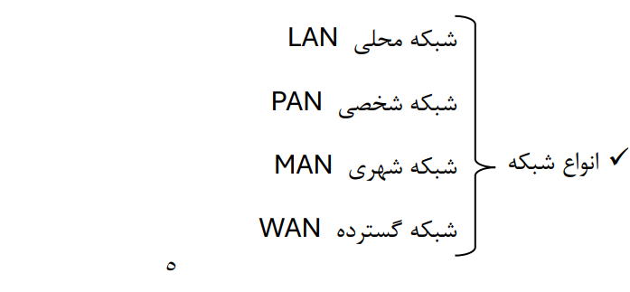
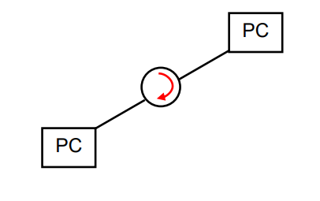
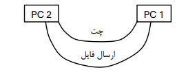
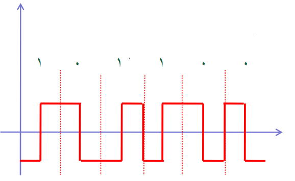
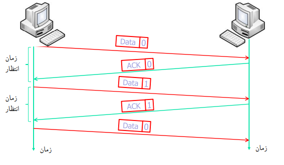
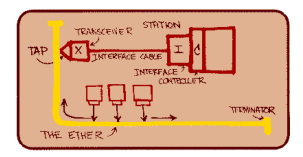

دلایل نیاز به شبکه : اشتراک گذاری سه حوزه -1 فایل ها و داده ها -2 سختافزار و منابع -3 سرویس ها و سخت افزارها
مدل های مختلف شبکه: از روزی که نسل اول کامپیوترها آمد با مظهور Frame Main ها و طبیعتاً وجود ترمینال هایی که به اینها متصل می شدند اولین اشتراک گذاری شکل گرفت . بعد از این PC ها ظاهر شدند و با قیمت کمتر تونستیم کامپیوترهایی تهیه کنیم و اینجا شبکه های توزیع شده شکل گرفت.
در گام بعد صحبت از این هست که این قدرت محاسباتی که پخش شده در دنیا با استفاده از PC هایی که افراد دارند این را بتوان یکپارچه استفاده کرد و قدرت محاسباتی قوی شکل بگیرد. در حقیقت اشتراک گذاری منابع سختافزاری از منابع پرینتر و اسکنر و هارد دیسک فراتر می رود، بلکه به اشتراک گزاری Cpu قدرت محاسباتی: RAM حافظه اصلی کامپیوتر می رسد که در حقیقت کامپیوتر خیلی بزرگ را در سطح دنیا ایجاد می کند. حتی بحثهای مربوط به اینکه از پردازنده موبایل استفاده شود یعنی هر زمانی که به ایترنت وصل هستی چیزی در موبایل اجرا بشه از حالت محاسباتی استفاده بشه برای انجام کارها.
اینها مباحثی است که در دنیا مطرح هست و حتی بحث شبکه هم که به آن متصل می شود، به جایی مثل اینترنت و... می رود. نه اینترنت فقط کامپیوتر. از جمله مواردی که به شدت االن در آن سرمایه گزاری می شود بحث ارتباط خودروها هست که ارتباطهاش زمینهساز بحث های ایمنی خودروها هست، هم مدیریت ترافیک هم بعدها ممکنه به اشتراک گذاری هم وجود داشته باشد. همانطور که االن اشتراک گذاری فایل ها و اطالعات رو شبکه های تلفنی و شبکه های اجتماعی وجود دارد یکسری عناصر مهم داریم درشبکه ها که می خواهیم تصمیمگیری کنیم در خصوص اینکه شبکه را چطور مدل کنیم و چگونه طراحی کنیم

این 4 رکن اصلی رو باید در نظر بگیریم: معیارهای تصمیمگیری در شبکه ها
-1 امنیت
-2 سرعت که ما تخت عنوان کارایی می شناسیم. (کارایی – performance )
-3 هزینه cost
-4 قابلیت اطمینان Reliability
این معیارها معیارهای مهمی است، اگرچه بعضی از اینها می تواند به این مجموعه اضافه شود و بعضی ها داخل اینها قرار بگیرد. در این معیارها با هم یک موازنه یا یک( off trade )بین اینها وجود دارد.
این معیارها خیلی مهم است، مثال کارایی سرعت شبکه برای ما اهمیت فوقالعاده دارد. اگر شبکه سریعتر باشد، بهتراست. در کنار این بحث هزینه مطرح می شود یعنی شما اگر چه کارایی را دوست دارید و به سمتش حرکت می کنید اما باید ببینید چقدر توان پرداخت هزینه دارید براساس اون نیازی که دارید. به عنوان مثال دانشگاه میخواهد انتخاب واحد انجام دهد، یک عرض باند باالیی میخواهد که باید هزینه باالیی بدهد مثال ماهی 15 تا 20 میلیون به مخابرات بابت عرض باند باید پرداخت شود، اما درخانه با ماهی 10 تا 20 هزار نیاز به عرض باند برطرف می شود. مثال شبکه دانشگاه ممکنه از وایرلس استفاده کند. یک وایرلس وصل میکنند به همه شبکه بدند یا فیبرنوری بکشند. سرعت فیبرنوری و عوامل دیگر مثل کارایی و ... خیلی در فیبرنوری باالست اما هزینه آن فوق العاده باالست و این تصمیمگیری شماست که آیا برای این ساختمان اصال فیبر نوری الزم هست یا نه یا اصال هزینه اضافه است. درکنار این دو بحث امنیت هم مطرح می شود. امنیت محدود کننده ی کارایی است. چرا؟ مثال شما ممکنه 1000 تا 2000 تومان داشته باشید، این ممکن است روی همین میز بزارید و خیلی اهمیت ندارد، اما اگر شد 50.000 دیگر روی میز نمی گذارید مثال داخل کشو می زارید اگر مثال 5 میلیون یا سکه باشد، داخل بانک می گذارید. چی تعارض با کارایی دارد؟ وقتی 1000 تومان را میخواهید دسترسی پیدا کنید همون لحظه از رو میز برمی دارید، وقتی نیاز به 50.000 دارید باید کشو رو باز کنید بردارید، وقتی نیاز به 5 میلیون دارید باید به بانک برویدو... امنیت خوب است اما کارایی را به شدت کاهش می دهد .
هزینه هم باید پرداخت شود. اینجا شما تصمیمگیرنده هستید که بزارید رو میز یا ببری داخل بانک. به محیط هم بستگی دارد. مثال شما گوشی رو در کالس نزاری و بری و شاید در اتاق کار بزاری و بری بیرون. محیط هم امینتاش مهم است.
چهارمین عامل که مهم است قابلیت اطمینان هست. Reliability اطمینانی که شما دارید مثال میگی من می خواهم یک اطمینان در ارتباط داشته باشم. ارتباط مطمئن، ارتباطی است که قطع و وصل نشه، ارتباطی که خطاش باال نباشه. مثاال وقتی سراغ شبکه اینترنت میری میگی از وایرلس می تونم استفاده کنم. اما وایرلس قابلیت اطمینانش پایینه، بعضی وقتها قطع می شه، کند می شه اما فیبرنوری قابلیت اطمینانش باالست. این یعنی درجاهایی که قابلیت اطمینان باالیی می خواهد مثال یک سروری میخواد همیشه در دسترس باشه، 365 روز سال در اختیار باشه و اینجاها باید قابلیت اطمینان رو باال ببریم. ما یک سرور داریم برای انتخاب واحد. این سرور به محض اینکه اتفاقی برای پاورش بیفته از دور خارج میشه. برای حل این مشکل، یک سرور دیگر میزارند، دو تا سرور همزمان یا تعدادی بیشتر که اگه یکی done شد بعدی باشه. تفاوت سرورها، معموال سرور که میگم از حهت سخت افزار است که بهش سرور می گویند وگرنه سرور به معنی سرویس دهنده است. میتونه کامپیوتر معمولی ساده باشه اما این سخت افزاری که عرفا به عنوان سرور مطرح شده معموال پشت کامپیوتر 2تا پاور داره که اگر یکی دچار مشکل شد دومی سریعا میاد سوییچ میکنه بدون اینکه برق قطع و وصل بشه یا مثال هارد اگر داشته باشه و بسوزه. تکنیکهایی به نام تکنیک RAID وجود داره. برای ذخیره اطالعات و ... که اگر یک هارد بسوزه، یک هارد دیگر سریعا جایگزین میشه و اطالعات از بین نرفته. حتی در سرورهای که وجود داره اینطور هست که چهارتا هارد وجود داره که حالت جکی هم داره میاد بیرون.
این اطالعات همزمان در 4 هارد هست البته با یک الگوریتمهایی. مثال 4تا 3تا G148 رو که میشه 450 به شما 300 تا ذخیره میدهد. میگه حافظه 300 تاست و اون 150 تا رو نگه میداره. اینجا شما قابلیت اطمینان را بردی باال اما هزینه رو هم بردی باال. اگر بخوای هزینه زیاد نشه، ممکنه چه اتفاقی بیفته؟
دو تا هارد، یکی داخل کامپیوتر یکی بیرون، اطالعات رو روی هردو کپی میکنم هرشب. اما اگر هارد که داخل هست سوخت، باید باز کنم و هارد رو تعویض کنم.
این دستگاه که یک دستگاه معمولی است با یک هارد، با سروری که همزمان 20 تا هارد رو پشتیبانی میکنه خیلی فرق دارد. شما در اینجا اگر چه توانستی تکرار، افزونگی رو ایجاد کنی اما کارایی رو از دست دادی، بخاطر اینکه هزینه نکردی سرور بخری که همزمان این کار رو انجام بده، باید خودت بردرای این رو قطع کنی.
پس در حقیقت هزینه، امنیت، کارایی، قابلیت اطمینان چهار فاکتور اصلی است که شما باید بین اینها off trade کنی. تصمیم بگیری که چی به چی می ارزه و االن در چه وضعیت و موقعیتی هستی. بریم سراغ شبکه هایی که داریم شبکه هایی که وجود داره تقسیمبندی که عرفا براش بیان میشه. شبکه های محلی یا LAN محدوده اینها محدود کوچکی است، تعریف مشخص و مرزبندی شده ای برای تفاوت بین انواع شبکه وجود نداره. شبکه های کوچک رو میگن lan مثل تعریف شهر و روستا می مونه مثالً روستای زیر 200 هزار نفر است، باالی 200 هزار روستا نیست، شهر باالی 200 هزار نفر است اما 1۹۹ هزار نفر باشه شهر نیست، نه خیلی نمی تونی این تقسیم بندی رو مشخص کنی . اماعرفا شبکه های محلی یا lan شبکه هایی هستند که محدوده کوچکی دارند و مثالً محدوده می تونه یک ساختمان یا یک اتاق یا بعضا چند تا ساختمان باشه در جاهای مختلف جغرافیایی معموالً به هم نزدیک مثالً در قالب یک شهر در قالب یک محله. البته شما با توجه به تکنولوژی که در اینترنت وجود دارد مثل wpk و امثال این می تونی شما LAN رو در سطح دنیا هم برقرار کنی مثالً 10 تا کامپیوتر در نقاط دنیا به هم متصل هستند از طریق LAN. تقسیم بندی کوچکتری هم داریم که دو تا سه تا کامپیوتر در خانه به هم وصل است این رو DAN می گویند. بعضی ها اصالً MAN در نظر نمی گیرند و فقط می گویند LAN و WAN داریم. وقتی شبکه ها در حد یک شهر یا چند شهر باشد اینها شبکه های MAN هستند، شبکههای گسترده که در حقیقت شبکه هایی هستند که در سطح کشور یا چند کشور در سطح دنیا هستند که الزاماً که اینترنت نیست اما معروفترین شبکه، شبکه اینترنت. شبکههای مخابراتی، شبکه ملی، اینترنت است. این تقسیم بندی از بعد جغرافیایی اینجا وجود دارد
-1 محدوده جغرافیایی
-2 مالکیت تجهیزاتی )معموال در شبکههای LAN مالکیت تجهیزاتی مربوط به یک نفر یک شرکت است، اما در شبکه های WAN، گستردگی مالکیت داریم مثالً شبکه اینترنت مال کیه؟ یک قسمت مال آمریکا در ایران زیر نظر مخابرات و... در کل دنیا هر تکه مال یکی است.(
-3 تنوع تجهیزاتی: درشبکه های LAN وقتی سفارش میدی یک شرکتی میخواد بخره، قطعات رو یکی میخره. مثال از سوییچ استفاده کنه همه رو HD میخره، یک مارک میخره. اما تنوع تجهیزات در شبکه های گسترده به این شکل نیست. وقتی مالکیت متفاوت شد، هرکس یک مارکی میخره.
-4 سرعت انتقال: در شبکه های داخلی، سرعت انتقال به مراتب باالتر از شبکه های گسترده است. مثال شبکه محلی خودتون که کامپیوترها رو ب هم وصل میکنه، سرعت mbp100 است؛ این سرعت اسمی کابل های شبکه 5 CAT است که البته 7 CAT 6, CAT تا Gbp1 سرعت فوق العاده باالیی است. مثال یک CD را که GB1 است رو در عرض 8 ثانیه منتقل میکنه. سرعت اینترنت را بیت میخری به بایت دانلود میکنه. مثال Kbp256 را میخری از مخابرات KB32 = 8 / 256 بیشترین سرعتی که واسه دانلود میشه .32
-5 نرخ رخداد خطا در شبکه محلی خیل یکم رخ میدهد. در شبکه گسترده احتمال بروز خطا در ارسال بستهها زیاد پیش می آید
اگر بخواد در یک شبکه کامپیوترها به هم متصل شوند، برای متصل شدن و حرف زدن با هم و ارسال اطالعات چه عناصری را می توانی نیاز داشته باشی؟
-1 فرستنده و گیرنده )خود دستگاه ها را نیاز داریم(
-2 رسانۀ انتقال )هوا(
-3 پروتکل یا همان زبان مشترک
-4 داده ارسالی )همین حرفی که زده میشود(
اینها اجزایی است که در شبکه وجود دارد و ما برای تک تک اینها باید برنامهریزی کنیم. مثال محیط فیزیکی چه چیزهایی می تواند باشد؟ برای ارسال داده ها چگونه ارسال شوند در محیط فیزیکی؟ فرستنده و گیرنده چگونه ارسال و دریافت می کنند و با چه پروتکلهایی باشد؟
پروتکل یک قراردادی زبان مشترک منظورم هست.
حاال اگر این قرارداد در حوزه انتقال اطالعات باشد، پروتکل ارتباطی. اگر در حوزه امنیت باشد می شود پروتکل امنیتی. اگر رمزی بخواهیم حرف بزنیم مثالً میگم این کلمه رو گفتم منظورم انجام این کار است، این می شود پروتکل امنیت. اگر یک قاعده برای مسیریابی باشد می گویند پروتکل مسیریابی، مثالً در ترافیک می گویند سمت راست حرکت کن، پس هرجا پروتکل شنیدی یعنی قرارداد مشترک .
پروتکلهای خاص می توانند بین هر شبکه ای وجود داشته باشد مثالً می توانیم از این به بعد بگوییم من که با شما صحبت می کنم از زبان فارسی استفاده نمی کنم، ازبانی که بهتون آموزش می دهم استفاده می کنم، این اتفاق می تواند بیفتد اما کسی دیگر نمی تواند با ما صحبت کند اگر قرار بود هر کسی برای خودش پروتکل ارائه بدهد خیلی اتفاق بدی می افتاد و خیلی سخت ی شد ارتباط برقرار کرد. شاید به تعداد آدم ها باید زبان یاد می گرفتیم.
پس یک سری پروتکل عمومی استفاده کردیم که این پروتکلهای عمومی طبیعتاً دو دسته هستند نیاز به استاندارد دارند یعنی باید یک فرمت خاصی داشته باشند، یا استانداردهای اسمی هستند یا استانداردهای رسمی هستند. البته استانداردهای اسمی که با آنها سر و کار داریم استانداردهایی هستند که شرکت های مختلف مثالً مایکروسافت و سیکومی گویند برای ارتباط دستگاه ها این پروتکل را استفاده کند ما این استاندارد را مراجع بینالمللی تایید نکردند دلیل اینکه یک استاندارد از زمانی که شکل می گیرد تا زمانی که استاندارد عمالً توسط مراجع بین المللی ایزو استاندارد شده باید خیلی از ایرادهای آنها گرفته بشود. مثالً زبان C سال 1۹85 ارائه شد اما استاندارد نشد، سال 1۹۹5 استاندارد شد. این پروسه اینطور شکل می گیرد. سپس وقتی به حدی رسید که practice goode هست هست ی تواند گام اول برای استانداردسازی جهانی را داشته باشند.
نحوه ارتباط کامپیوترها و اجزای شبکه با هم است که در حقیقت طرح هندسی اینهاست. طرح هندسی
که می گویم شما در نظر بگیرید نحوه اتصال کامپیوترها به هم. اگرچه بعداً توپولوژی را به دو توپولوژی
فیزیکی و توپولوژی منطقی تقسیم می کنیم. اما مثالً تصور این باشد که این کامپیوترها چگونه به هم
وصل باشند مثالً همه به یکی وصل هستند.
ین نحوه اتصال کامپیوترها را می گویند توپولوژی. طبیعتاً بین دو تا کامپیوتر یک حالت وجود دارد که به
هم وصل باشند اما وقتی صحبت سر بیش از دو کامپیوتر می شود مطرح می شود که چه توپولوژیهایی
می توانیم داشته باشیم؟ به چه شکل هایی می توانند کامپیوترها به هم متصل شوند؟
اولین توپولوژی که وجود دارد توپولوژی کامل هست گراف کامل در آن وجود دارد. این توپولوژی ویژگی هاش مزیت خیلی باالیی که داره قابلیت اطمینان و کارایی را دارد کارایی آن سرعت بسیار باالیی دارد اما هزینه فوق العاده باالست.

یک مسئله دیگر مفهوم گسترش پذیری است. برای $n$ کامپیوتر، تعداد لینکها از فرمول $n(n-1)/2$ محاسبه میشود. تا 6 کامپیوتر لینکهای محدودی میخواهد اما 10 تا کامپیوتر 45 تا ارتباط و اگر شد 100 تا کامپیوتر میشود 5000 تا ارتباط؛ 5000 تا لینک هر کدام باید کارت شبکه داشته باشند پس عیب توپولوژی کامل گسترش پذیری است.
✓ مزایا توپولوژی کامل:
✓ معایب توپولوژی کامل:
فرض کنید در خیابانها اگر میخواستیم توپولوژی کامل را برقرار کنیم باید بین هر خانه شهر یک جاده میکشیدیم که عملاً امکانپذیر نیست. اتفاقی که افتاد این بود که ما یک سری خیابانها را تقسیمبندی میکنیم و میگوییم از طریق خیابانها وصل شو به مقصدی که میخواهی. توپولوژی گذرگاه مشترک یا Bus همین است. از این توپولوژی در شبکه و در مدارهای کامپیوتر و در خیلی جاها استفاده میشود که یک مسیر مشترک میگذاری و همه از طریق این بستر مشترک به هدف میرسند. عیبهایی دارد که یکی از ایرادهای جدی این است که اگر مسیر ارتباط قطع شود خیابان بسته شود، ارتباط قطع میشود. مشکل دیگر، امنیت ندارد در بحث کارایی یک مشکل دارد، مسیرها فقط حالت یکطرفه دارد یعنی یک بسته میتواند در این بستر منتقل شود یا نهایتاً دو بسته به خاطر اینکه دو طرفه باشد؛ این دو طرفه بودن به این معنی نیست که 10 تا بسته از 10 جا منتقل شود، هر لحظه فقط یک بسته و ماکزیمم دو بسته جابجا میشود. سرعت میآید پایین اما هزینه نسبت به توپولوژی کامل به شدت کاهش پیدا کرده است.
معایب توپولوژی Bus
اگر مسیر قطع شود ارتباط بهم میخورد
معطلی برای ارسال اطلاعات وجود دارد
این توپولوژی خیلی جاها استفاده میشود. مثلاً حتی شبکههای LAN که به آن وصل هستید از این توپولوژی استفاده میکردند. الان شده اترنت که حالت Star شده، قبلاً از Bus استفاده میکردند. تجهیزات دیگری داشت، کارت شبکههای پشت کامپیوتری شکل دیگری بود و دیگر 25 سالی است که عوض شده و به صورت اترنت شد. ولی در بعضی تجهیزات که البته این تجهیزات هم دارد منسوخ میشود مثل Hub که قیافه ظاهری Star هست اما قیافه باطنی Bus است (توپولوژی منطقی آن Bus است.)

همه کامپیوترها به هم وصل هستند اما در وسط کار کامپیوترها قرار دارد. در این توپولوژی وابسته به یک نقطه نیستیم یعنی اگر یک اتفاقی بیفتد حتی در بعضی ویرایشهای آن، دو تا Ring داخل هم هست که یکی برای رفت و یکی برای برگشت استفاده میشود که حتی اگر یکی از این اجزا هم Down شود، این Ring حالتش حفظ شود؛ وقتی با دو تا Ring داخل هم هست این حالت حفظ میشود.
اما گسترشپذیر نیست چون ارسال هر اطلاعاتی از یک جز به جز دیگر باید توسط یکی به بعدی Forward شود و همینطور ادامه پیدا کند. حالا اگر 100 تا کامپیوتر باشد باید پاس بدهند تا به آخری برسی؛ این زمانش زمان خوبی نیست و گسترشپذیر نخواهد بود. از این ایده در جاهای دیگر استفاده میشود، مثل گذرگاه مشترک که گفتم در Hub استفاده میشود و تلفیقی از Star و Bus هست.
این توپولوژی در سرورهای شبکه استفاده میشود. در بکبونهای (Backbone) اینترنت یعنی جاهایی که مراکز اصلی توزیع اینترنت هستند. اینترنت کجا هست؟ همه جا پخش است و جای خاصی ندارد.
Backbone یا ستون فقرات، مراکز اصلی وجود دارد که جاهایشان مشخص است؛ بخشی از این بار زیاد در آمریکا، بخشی در اروپا، در چین و بخشی ممکن است برای ارتباط در ماهوارههایی باشد که دور زمین میچرخند. اینها مراکز اصلی اینترنت هستند که این Backboneها بین هم، در بعضی شرایط ممکن است از توپولوژیهایی که مرسوم هستند و ما فکر میکنیم استفاده میشود، استفاده نکنند.
✓ ویژگیهای توپولوژی Ring:

همه کامپیوترها به یک مرکز وصل می شوند و این دستگاه مرکزی وظیفه برقراری ارتباط بین همه کامپیوترها رو داره این دستگاه مرکزی متولی برقراری ارتباط در شبکه هست که اگر اتفاقی برایش بیافته ِ Done میشه اگر برای هر کدام این کامپیوترها اتفاقی بیفته هیچ مشکلی پیش نمی آید. انعطاف پذیری نسبت به شکست کامپیوترها وجود دارد اما انعطاف پذیری نسبت به شکست دستگاه مرکزی وجود ندارد. قابلیت گسترش در یک حدی خوبه اما از یه حدی به بعد این دستگاه مرکزی هست که بار خیلی زیادی دارد. در حقیقت یک گلوگاه ایجاد می کنه وقتی قرار باشه هر کس از طریق یک کس خاص ارتباط برقرار کنه اگر 5 نفر باشه میشه اگر یک میلیون نفر باشه این دستگاه مرکزی ظرفیت داره یک محدودیت گسترش پذیری وجود داره.
یعنی نحوه قرارگیری (هندسی) کامپیوترها کنار هم. اما 2 تا مفهوم وجود داره: توپولوژی فیزیکی، توپولوژی منطقی .
توپولوژی فیزیکی : نحوه وصل بودن کامپیوترها به هم
توپولوژی منطقی : یعنی تفاوتی وجود داره بین نحوه ارسال و انتقال اطالعات با نحوه چینش و آرایش سیستم ها. مثالً فرض کنید در توپولوژی حلقه، حلقه را یه خورده ببندم بازم حلقه هست و با یک کابل وصل می شن به این حلقه. بعد بیام این کابل را کوچیک کنم در یک دستگاه بزارم این رو از بیرون ببینی میگی توپولوژی Star است اما توپولوژی منطقی اون جوری که داره اتفاق می افته در حقیقت توپولوژی حلقه است. خصوصاً در دستگاه Switch Hub که دستگاهی هست برای انتقال. از بیرون Star است اما در دل خود توپولوژی Bus داره.
یکی از بحثها اینه که داده میخواد ارسال بشه فرستنده، گیرنده، داده ارسالی، محیط ارسالی؛ اینها اجزا شبکه بودند. داده ارسالی چگونه ارسال میشه؟ در شبکه صحبت این است که ما دو جور در بحث انسانی با هم صحبت میکنیم: ۱- من سخنرانی میکنم و شما گوش میدهید و کسی صحبت نمیکنه. ۲- پرسش و پاسخ و گفتگو است. اتفاقی که در ارسال اطالعات میافته این هست یعنی اینجوری نیست که من اگر بخواهم یک بسته ارسال کنم برای شما ادامه بدم تا هر جا تموم شد اجازه بدم دیگران ارسال کنند.
هر کسی یک زمانی داره واسه ارسال اطالعات بعضی وقتها به زمان Fix میکنند بعضی وقتها به اندازه بسته Fix میکنند. مثلاً 500 کلمه. مدل صحبت کردن و ارسال اطالعات در شبکه همین جوری است مثلاً ی فایل داری 5MG است این 5MG شکسته میشه به بستههای 24k این ارسال میشه به شبکه در Bus. بعضی بستهها اولویت باالتری دارند و بعضی باید زودتر برسند. آیا به همان سرعت که یک بسته تصویری ارسال میشه با یک ایمیل هم ارسال میشه؟ نه ایمیل پنج دقیقه بعد هم ارسال شد خیلی مهم نیست اما اون تصویر اگر دیر ارسال بشه تصویر را نمیبینی.
نکته: در فیلم دقت ارسال مهم نیست سرعت مهم است. در ارسال فایل دقت مهم است سرعت مهم نیست این میشه کیفیت ارسال در شبکه.
در توپولوژی کامل نیازی به بستهبندی دادهها نیست. توپولوژی کامل وقتی باشه همه به هم وصل باشند هر دو نفری با هم ارتباط داشته باشند چه نیازی داره منتظر بمونند که یک خط خالی بشه خط اختصاصی واسه این دو نفر اختصاص پیدا کرده دیگه معطل نمیمانند همین جوری ارسال اطالعات میکنند.

همین جوری که بسته بندی می کنیم اطالعات رو که تا ارسال کنیم شباهتش بیشتر به خودروها خواهد بود لذا یک سری بسته هایی از یک مبدأ به یک مقصد در حال حرکت است در این مسیر در خیابونهای مختلف می روند تا به مقصد برسند پس این شکل مثل در حقیقت وضعیت ترافیکی که در خیابانها هست همین وضعیت ترافیکی را در حوزه شبکه داریم خصوصاً در شبکه های بزرگ مثل شبکه های WAN به شدت ترافیک وجود داره. مثالش : یک صفحه اینترنت که می زنی باال نمی آد طول می کشه یک ترافیک افتاده . یک بسته داره از یک مسیری می آید مثالً از همت داره می آید ترافیک هست نمیرسه بعد مسیرش رو عوض می کنه مثالً از نیایش می آد. در شبکه هم همین است یک دفعه سرور ارسال بسته را از یک مسیری کرده که ترافیک بوده در صف گیر کرده صف بعدی خیلی طول کشیده تا بسته برسه در حالی که اگر دوباره Refresh بزنی یک مسیر دیگه پیدا می کنه. پس ترافیک داره حتی طرح ترافیک داره ی جاهایی ورود مجوز نداره یک سری بستههای خاص با الویت های خاص وارد می شند.
بحث تصادف داریم در الیههای پایین تر در شبکه. در بستر الیه فیزیکی که خواهیم گفت دو تا بسته من می خواهم صحبت کنم با یکی . همون لحظه شما هم می خوای با من صحبت کنی من تا شروع می کنم صحبت شما هم صحبت می کنی تصادف رخ می ده. یعنی بسته ارسال می شه از اون طرف هم همزمان می بینم خط خالی است بسته دیگر را ارسال می کنه بستهها با هم تصادف می کنند و هر دو بسته از بین می روند فرکانسی که دارند می خورند به هم موجها (اون 0 و 1 ها) هر دو از بین می روند. مثل صحبت همزمان دو نفر است که با تصادف یعنی هر دو ساکت می شیم یکی به دیگری اجازه صحبت می کنه و از اول ارتباط شکل می گیره. بعضی جاها چراغ قرمز داریم بسته باید صبر کنه بعد ارسال بشه و امثال اینها.
1- بسته که حجم زیادی داره مثالً 5M می شکنی به یک سری بسته این رو قبالً گفتم اندازه بستهها
مشخص است.
2- بعد بسته ها را تخصیص می دهی یک شماره به هر بسته، اگر قرار باشه 50 تا بسته باشه ارسال بشه،
شماره نداشته باشه از کجا وقتی گیر کرد بفهمی کدوم اول بوده کدوم دوم پس باید شماره داشته باشه.
3- آدرس مقصد مثل کسی که داره نامه می نویسه باید یک آدرسی بده. بعد اینها تبدیل می شند به اون
فرمتی که امکان ارسال در فضای فیزیکی وجود داره
در فضای کامپیوتر همه چی 0 و 1 است اما در فضای فیزیکی که داریم یا رو کابل است یا فیبر نوری است یا وایرلس باید 0 و 1 تبدیل به نور و امواج بشه. اگر کابل است تبدیل به یک سری فرکانس بشه که در سطح کابل امکان ارسال ولتاژ وجود داره. این پروسه پروسه ای که الیه کاربرد (باالترین الیه) می خواد ی پیام را ارسال کنه به الیه کاربرد طرف مقابل خود ی سری انجام می شه تا به 0 و 1 برسه بسته ارسال بشه بیاد باال. این مجموع اتفاقهایی که می افته موضوع درس است ما در این درس می گیم از اون لحظه ای که شروع می شه چه اتفاقاتی می افته می آییم پایین دوباره تبدیل می شه به 0 و 1 به اون بسته می رسه دست طرف.
بر این اساس آمدند یک سری الیه بندی کردند هر کار رو روی یک لایه های تخصیص دادند. به طور کلی ایده لایه بندی گذشته از بحث شبکه در خیلی از حوزهها مثل سیستم عامل مثل نرمافزار حتی سختافزار استفاده می شه جهت کاهش پیچیدگی . یکی از تکنیکهای کاهش پیچیدگی طراحی الیهبندی است. یعنی می گی یک سطوح مدیریتی، کارشناسی، اپراتوری تعریف کنیم همه کارها رو ی نفر انجام نمیدهد.
این لایه بندی هم موجب کاهش پیچیدگی می شه هم موجب سهولت در پیگیری اگر اتفاقی افتاد متوجه می شیم کدوم لایه بوده کجا کار گیر کرده هم تغییر قوانین هر الیه خیلی راحتتر است. شما وقتی به هر الیه یک کاری اختصاص می دی طبیعتاً مشکلی برای تغییرش خواهی داشت. می آییم ی کاری می کنیم یک واسط تعریف می کنیم یک Interface تعریف می کنیم. باعث می شه یک زبان مشترکی بین الیه باالیی و الیه پایینی به وجود بیاد و دیگه مجرد بشه از اینکه این لایه چیه اگر این لایه رو برداری یکی دیگه جاش بزاری وایرلس بزاری، برداری کابل بزاری نیازی به تغییرات در لایه ها نیست.
این هفت الیه که معماری (Open System Interface) OSI برعکس ISO می باشد. البته در عمل چیزی که وجود داره در دنیای واقعیت 5 الیه هست به معماری TCP/IP معروف است.
که در معماری TCP/IP این دو الیه ادغام شده . بعضی از وظایف الیه Session به انتقال سپرده شده و عمده مسئولیت Presentation به الیه Application واگذار شده. لذا در معماری TCP/IP ما 5 الیه داریم: Application، Transport، Network، Data link، Physical. تفاوت این دو الیه 5 و 7 بود.

در لایه فیزیکی تنها بحثی که مطرح میشود این است که داده 0 و 1 دقیقاً در بستر فیزیکی چطور ارسال بشه. آیا این داده خطا دارد به ما مربوط نیست، آیا این داده درست است، آیا این داده به مقصد میرسد، چقدر میرسد، آیا سرعت ارسال خوب است، تند است یا کند است، مسیریابی چگونه است؛ هیچ کدام از این مطالب در این لایه مسئولیت این لایه نیست. مسئولیت این لایه فقط 0 و 1 را تبدیل به بستر فیزیکی میکند. اگر نور است تبدیل میکند به سیگنال نوری فیبر نوری. اگر وایرلس است تبدیل میکند به سیگنالهای امواج الکترومغناطیسی. اگر کابل است تبدیل میکند به ولتاژ مثبت و منفی و صفر. پس مسئولیت ارسال بیتهای 0 و 1 تعیین سطوح ولتاژ یا سطوح نوری است که در ادامه توضیح میدهم.
هیچ مسئولیتی در قبال وقوع خطا ندارد حکم حاصل است. یک بسته میدهیم به پستچی میگویند برسان به مقصد. لایه فیزیکی به دو شکل ارسال میکند یا نقطه به نقطه یعنی از یک کامپیوتر به یک کامپیوتر دیگر یا Point to Point؛ یا به صورت پخشی هست مثل صدا و سیما، نقطه به نقطه نیست پخش میکند هر کسی گرفت گرفت براش مهم نیست گیرنده کی هست. مثل وایرلس. ارسال اینطوری امنیت پایینی دارد چون مدل ارسالش این است که در فضا پخش میکند هر کس گرفت گرفت مسئولیتی در ازای ارسال ندارد مثل اینکه من با شما کار دارم پیغام را عمومی میگویم همه میشنوند اما به کسی مربوط نیست.
۱- توپولوژی است که قسمتی از آن را توضیح دادیم که چه جوری کامپیوترها به هم وصل هستند.
۲- نوع سیگنالی که ارسال میکند در لایه فیزیکی هم میتواند دیجیتال ارسال بشود هم آنالوگ و اینکه چه جوری آنالوگ ارسال میشود و طرف دیگر دیجیتال تبدیل میشود که مباحثی است که خواهیم گفت. مودم در حقیقت این کار را انجام میدهد. مودم دادههای دیجیتال را تبدیل میکند به آنالوگ، آنالوگ را تبدیل میکند به دیجیتال. مودمها از بستر آنالوگ استفاده میکنند بعضیها هم از اول تا آخر دیجیتال است مثل کابلهای مسی که در شبکه استفاده میشود. محیط ارسال (فیبر نوری، وایرلس و کابل) و واسطهای ارتباطی کارت شبکه (که کارت شبکه چند تا وظیفه دارد یکی از وظایفش این است).
از این لایه که بیاییم بالا تازه مسئولیتهای جدیتری شروع میشود این بستههایی که ارسال شده در حقیقت باید تشخیص داده شود درست هستند یا نه. پس اولین جایی که خطا را چک میکند در خصوص یک بسته ارسالی لایه دوم یا لایه پیوند داده است.
این لایه خطای تکتک بستهها را بررسی میکند به کل بسته کار ندارد هر بستهای دستش برسد نگاه میکند مقصد درست است بسته سالم است میدهد بالا دیگر کاری ندارد. سالم از جهت 0 و 1. این همان لایهای است یک نوع تجرید نسبت به لایه فیزیکی است یعنی این همان لایهای است که باعث میشود که لایههای بالاتر خبری نداشته باشند لایه پایینی وایرلس بوده کابل بوده یا فیبر نوری، یک نوع تجرید ایجاد میکند.
کنترل جریان: مثل اینکه من صحبت میکنم و شما به سرعت من نمیرسی بنویسی. فرستنده با یک سرعتی ارسال پیام میکند که گیرنده توانایی پردازش با آن سرعت را ندارد. مدیریت تصادم یا تصادف انجام میدهد.
تخصیص آدرس فیزیکی: یکی از وظایف این است یک آدرس فیزیکی که همه کارتهای شبکه دارند از موبایل گرفته تا هر چیزی که به شبکه متصل میشود یک آدرس فیزیکی دارند، تخصیص آدرس فیزیکی به همین لایه برمیگردد.
تا اینجا کار شبکه تمام است یعنی اگر بخواهی یک شبکه محلی داشته باشی همینها کافی بود. نیاز به لایه شبکه چه وقت است؟
نیاز به این لایه زمانی مطرح میشود که ارتباط بین شبکهای مطرح میشود یعنی اگر یک شبکه داری عملاً نیازی به لایه سوم نداری وظایفش را لایه دوم خوب انجام میدهد. اما وقتی شد بین چند تا شبکه، برای ارتباط شبکهها حتماً باید لایه شبکه باشد.
وظایف این لایه مسیریابی و هدایت بستهها به درون زیرشبکهها. اگر من میخواهم الآن یک پیغامی به شما بدهم دیگر لازم نیست مسیریابی انجام شود. اما اگر قرار بود مثلاً یک پیغامی از اینجا به دانشگاه دیگر ارسال بشود باید یک مسیریابی بشود من به یکی بگم تا برود.
تخصیص آدرس منطقی یا منحصر به فرد IP آدرس اینجا انجام میشود. تبدیل آدرس منطقی به فیزیکی. کنترل تراکم یا Congestion مشابه همان کنترل ترافیک، وقتی ترافیک رخ میدهد باید یک پلیس بیاید مسیریابی کند، عیبیابی و کنترل تراکم در این لایه است.
در این بخش ما با یک کلیت سروکار داریم ما یک پیام 5M را میخواهیم از فرستنده به گیرنده بفرستیم در حقیقت آن 5M را میشود گفت لایه انتقال دارد میفرستد متولی ارسال یک بسته کامل لایه انتقال است. لایه انتقال است که میگوید لایه شبکه برود به این لایه شبکه، برود به بعدی و میرسد به پیوند داده، بستهبندی میکند کوچک کوچک و لایه فیزیکی میفرستد میآید بالا. آن کسی که کل بسته را تحویل میگیرد و ازش میگیرند سالم و صحیح بسته را. یعنی کسی که ممکن است بهش بگویند دارد یک سری نقشه با این مشخصات با یک سری کتاب با این مشخصات ارسال بشود اگر این بررسی میکند مسئول دفتر است که از لایه کاربرد که لایه بالاتر است بررسی میکند و تحویل به مقصد میکند میشود لایه انتقال. حالا این کل پیام را میشکند به لایه پایینتر و پایینتر اینها مسئولیتهایشان را انجام میدهند آخرش 5M را تحویل میدهند. مسئولیت بروز خطا در کل پیام با لایه انتقال Transport است. تحویل به نرمافزار مربوطه لایه انتقال است. مسئولیت کلی و جدی دارد. در حقیقت میشود گفت بالای لایه انتقال زبان زبانِ انسان است و کاربردهای انسانی. پایین لایه انتقال زبان زبان شبکه است و ارسال بستههای شبکه.
ارتباط نرمافزارهای مختلف با هم اینجاست که: یکی از وظایف لایه انتقال این هست که مثلاً فرض کن یک کامپیوتر داری میخواهد به یک کامپیوتر دیگر وصل شود. ارسال کند مثلاً شما همزمان داری با یکی چت میکنی هم داری ارسال فایل میکنی فایل کپی میکنی هم Online فیلم از کامپیوتر میبینی، سه تا کار مختلف بین دو کامپیوتر. پس فقط آدرس فیزیکی و آدرس منطقی بین دو کامپیوتر کفایت نمیکند برای برقراری ارتباط. چون سه تا ارتباط داری که هم آدرس مبدأ هم مقصدشان یکسان است چه جوری میتوانی این سه تا را مدیریت کنی؟ مثل اینکه بگی یک سری پیغام از این ساختمان به ساختمان روبهرو دارم شما میگویی با کی کار داری در آن ساختمان. با شخص A با طبقه فلان و... پس چیزی جز آدرس، چیزی به عنوان Port مطرح میشود که هر کامپیوتر غیر از آدرس Port دارد و هر نرمافزاری که بخواهد رو کامپیوتر اجرا شود نیاز دارد که یک Port بهش اختصاص بدهی مثل یک آدمی که در جایی کار میکند باید یک پستی داشته باشد و شما با پست کار داری مثلاً با مسئول اداری کار دارم. مثلاً این کامپیوتر میگوید با این کامپیوتر میخواهم ارسال فایل کنم میگوید Port فلان مبدأ و Port فلان مقصد و... مسئولیت و مدیریت پورتها با لایه انتقال هست.
در حقیقت یک Session یک ارتباط برقرار میکند بین دو تا کامپیوتر. مثلاً شما ایمیل را باز میکنید و کلاً مرورگر را میبندید و بعد از ۵ دقیقه مرورگر را باز میکنید میبینید Session بسته نشده هنوز ایمیل باز است؛ البته این دو تا مفهوم دارد، بعضی وقتها خودش میفرستد بعضی وقتها هنوز Session باز است. این حالت بیشتر در اینترنت واحد دیدید بعضی وقتها بستن صفحه اگر Log off نکنید میماند، بعضی وقتها پنجره را میبندید Session ارتباطش با کامپیوتر دیگر روی آن Port خاص هنوز برقرار است، این جلسه تا تمام نشود این ارتباط برقرار است. مسئولیت این مسئله با لایه جلسه است.
بحثهای رمزگذاری در این لایه مطرح میشود یعنی رمزگذاری ۲ جنبه در این لایه دارد؛ البته رمزگذاری در لایههای مختلف مطرح میشود یعنی رمزگذاری در لایه ۳ هم داریم اما لایه اصلی که از جهت نرمافزار نگاه میکند لایه ارائه است. مثلاً فرض کن صفحاتی که ارسال میکنید در اینترنت HTTPS یا صفحه ایمیل یا صفحه بانک که User و Password که میزنید، اولش میزنید https:// حتماً باید s باشد و قفلی هم باشد. این لایه مسئولش همین فشردهسازی، امنیت کلمه و رمز عبور و تبدیل کدها است (بعضی وقتها نرمافزارها این را تبدیل به یک کدی میکنند که آن طرف ممکن است کد را نشناسد که باید تبدیل کند).
ما کل پروسه لایه Session و ارائه را در این لایه داریم. لایه کاربر گستردگیاش به اندازه گستردگی تمام کاربردهایی است که در شبکه وجود دارد. مهمترین وظایف آن را در جلسات بعد خواهم گفت.
دلایل نیاز به لایهبندی چیست؟
لایه فیزیکی: همانطور که گفتیم مسئولیتش انتقال بیتهای 0 و 1 است، از طریق سیگنالهای الکتریکی.
لایه فیزیکی 3 تا بستر کلی دارد:
-1 کابل مسی
-2 فیبر نوری
-3 الکترومغناطیس یا امواج بیسیم یا وایرلس
ما کاری به روش ارسال بیسیم نخواهیم داشت. فیبر نوری را هم یک اشارهای میکنیم. بیشتر دنبال سیگنالهای الکتریکی در بستر کابل را توضیح میدهیم که کاربردیترین حالت در حال حاضر همین است.
آیا 0 و 1 اینجا معنی دارد؟ در هر محیطی که داری، چه محیط ذخیرهسازی چه محیط ارسال، یک نوع کدینگ را تعریف میکنیم که این کدینگ نمادی از 0 و 1 است. مثلاً در فضای ذخیرهسازی هارددیسک، دادههایی که ذخیره میشود به صورت مغناطیسی ذخیره میشود؛ یک سری فیبر و مغناطیس هست مثل همین برادههای آهن که میبینید.
فرض همه جهتشان یکی است. بعد نوار کاست هم کارش همینجوری بود؛ روی نوار خام همه اینجوری هستند، بعد بر اساس صدا جهتها عوض میشد.
برای خواندنش، نقاط غیرهممغناطیس را که مرتب میکردیم، همه چیز مثل برادههای کنار هم انگار که یک آهنربا روش بکشی یکدفعه میریزد به هم. این اتفاق در هارددیسک هم میافتد. چیزی به صورت 0 و 1 ذخیره نمیشود بلکه آن چیزی که ذخیره میشود بر اساس محیط انتقال چیزی است که قابل ارائه دادن مفهومی به نام 0 و 1 باشد.
دو دسته سیگنال داریم:
سیگنالهای الکتریکی
آنالوگ
دیجیتال
فرق آنالوگ و دیجیتال؟ آنالوگها در یک طیف مشخص هستند، اما دیجیتال مقادیر محدود و مشخصی دارد. در حوزه آنالوگ محدود نیستی، تعدادش محدود نیست، اما در حالت دیجیتال تعداد مشخصی است.
یک مفهوم دیگر هم که به مجموعه آنالوگ و دیجیتال اضافه میشود، متناوب بودن و نامتناوب بودن است. در حقیقت 2 تا محور داریم:
-1 آنالوگ
-2 دیجیتال
-1 متناوب
-2 نامتناوب
متناوب یعنی در یک دوره زمانی حرکت تکرار میشود. اسلاید فصل دوم صفحه 1-6.


در امواج متناوب 3 تا مشخصه برای هر موجی وجود دارد:
دوره تناوب T، عکس فرکانس (بسامد) است. 1/T = f یعنی اگر در یک ثانیه چند بار رخ دهد. واحد فرکانس هرتز است.
اگر یک موجی در یک ثانیه 2 بار تکرار بشود، دوره تناوب میشود 0.5 ثانیه، فرکانس؟ 2.
واحدهای فرکانس و دوره تناوب اسلاید 7.

هر موج متناوبی را میشود با تعداد نامحدودی از موجهای متناوب سینوسی به دست آورد. اسلاید 9. دو تا موج را با هم جمع کرد؛ میشود چند تا موج را با هم جمع کرد. اسلاید 10.


هر موج سینوسی 3 تا ویژگی دارد:
-1 دامنه، یعنی MAX مقداری که میتواند قبول کند.
-2 بسامد
-3 اختلاف فاز یا فاز دارد؛ یعنی ابتدای موج سینوسی از چند شروع میشود. اگر از 0 شروع بشود میگویند اختلاف فاز ندارد.
با این سه مشخصه میتوانیم تمامی امواج متناوب را بسازیم حالا آنالوگ باشد یا دیجیتال. همین که متناوب باشه میتونیم. نحوه کدینگهای مختلف.
عرض باند: طیف بسامدی قابل اعمال روی رسانه برای ارسال اطلاعات است. نویز روی آن اثر کمتری دارد. هر چه عرض باند بیشتر باشد سرعت ارسال داده بیشتر است. عرض باند مثل عرض جاده میماند. اسلاید 11.

حالا میخواهم بدانم چهجوری باید کد کنیم. روی 3 تا ویژگی موج:
-1 دامنه
-2 فرکانس
-3 تغییر فاز
چهجوری ارسال اطلاعات کنیم.
سیگنال دیجیتال که 0 و 1 است، یک فاصله بیت وجود دارد که نرخ ارسال بیت یا همان Bit Rate میگویند؛ تعداد بیتهای ارسالی در واحد زمان. در یک ثانیه چند تا بیت میتوانی ارسال کنی؟
کدینگ یعنی چهجوری بتوانیم مفهوم 0 و 1 را سوار کنیم روی محیط. 4 شکل مختلف داریم:
-1 ارسال دیجیتال: یعنی تبدیل دادههای دیجیتال به سیگنالهای دیجیتال؛ یعنی 0 و 1 که در PC وجود دارد روی کابل به صورت دیجیتال.
-2 ارسال آنالوگ: تبدیل دادههای دیجیتال به آنالوگ چهجور اتفاق میافتد؟ در مودمها هم اینطور هست؟ بله.
-3 ارسال دیجیتال: تبدیل آنالوگ به دیجیتال؛ یعنی ماهیت داده آنالوگ است، 0 و 1 نیست مثل صدا و تصویر. الآن من دارم صحبت میکنم، شما روی رکوردر ضبط میکنی یعنی ماهیت آنالوگ را به صورت دیجیتال ذخیره میکنی.
-4 ارسال آنالوگ به آنالوگ: یعنی چهجوری میشود گفت آنالوگ مثل صدا را روی بستر آنالوگ مثل تلفن و رادیو پخش کرد؛ نحوه تبدیل دادههای ماهیتاً آنالوگ از طریق بستر آنالوگ.
چرا کدینگهای مختلف داریم؟ توضیح خواهیم داد.
واسطهای دیجیتال چی هستند؟ صحبت بر این است که قرار است دادههای دیجیتال یا آنالوگ را تبدیل کنیم روی بستر دیجیتال.
حالا این بستر چه جور بستری هست؟ بسترها 2 جور هستند یا موازی یا سری. صحبت در مورد کابل مسی هست.
در کابل شما یا میتونی موازی ارسال اطلاعات کنی یا سری. موازی همین چیزی بود که گفتیم؛ مثلاً همین کابل موازی شما 16 تا کابل کنار هم هست، با هم 8 تا را میفرستد، 8 تا هم واسه کنترل هست. در حقیقت شما میتونی یک بستر موازی کنار هم درست کنی یعنی از 8 تا کابل استفاده کنی، هر کابل متوالی ارسال 1 بیت باشد، پس هر بار که ارسال میشود 8 بیت ارسال میشود، دفعه دوم 8 بیت دیگر.
اما هزینه زیاد میشود به خاطر اینکه کابل پرحجمی هست و تعداد زیادی کابل مسی داخلش هست، پس محدودیتهای طولی دارد؛ هم به خاطر بحثهای تکنولوژی هم به خاطر بحث هزینهای. سری یعنی شما یک کابل داری روی همین یک بستر و 1 ها را پشت سر هم میفرستی، آن طرف هم یکییکی میگیرد و هم میچسباند؛ این میشود ارسال سری. در شبکه چون یک کانال ارتباطی بیشتر نیاز نیست و هزینه هم کمتر است، از روش سری استفاده میشود.
اما خود سری به دو شکل هست:
-1 همزمان
-2 غیرهمزمان
در روش غیرهمزمان زمانبندی سیگنال خیلی اهمیت ندارد، به خاطر اینکه بایت به بایت ارسال میشود. غیرهمزمان یعنی همزمانی بین فرستنده و گیرنده نیازی نیست. مثل پیام SMS میماند؛ وقتی SMS میدهی خیلی لازم نیست طرف همان موقع کلید به کلید منتظر باشد. اما حرف زدنها باید کلمه به کلمه همزمان باشد.
در روش غیرهمزمان زمانبندی سیگنال ارسالی مهم نیست یعنی time رد و بدل نشود. در کیبورد روش غیرهمزمان ارسال میشود. در هر ثانیه 3 کاراکتر و با سرعت کامپیوتر خیلی کم است؛ انگار یک لحظه یک کاراکتر میفرستی، بعد رفت، 2 ساعت دیگر کاراکتر میفرستی، از دید کامپیوتر خیلی فاصلهها زیاد است. یا مثلاً موس و صفحهکلید. بیت شروع بیت صفر است، با صفر شروع میکند، با یک دانه 1 یا 1.5 یا 2 تا 1 خاتمه مییابد. در موس و صفحهکلید به همزمانی نیاز ندارد به خاطر اینکه سرعت خیلی کم است.
اما در زمانی که سرعت خیلی زیاد است، مثلاً قرار است در شبکه در حد گیگابایت ارسال کنی نمیتواند صبر کند بایت بایت بفرستد؛ آنجا روش همزمان اتفاق میافتد یعنی آنجا نیاز هست 0 و 1 پشت سر هم ارسال میشود بدون توقف و همزمانی ساعتها خودش را نشان میدهد.
روش غیرهمزمان: در محیطهایی با سرعت ارسال پایین استفاده میشود. مشکلش این است که سربار اضافه شدن به ازای 3 بیت برای هر بایت است. ارسال بایتبهبایت و کانال عاطل است. اسلاید 16.
این روش، روشی نیست که بتوان برای ارسال اطلاعات بین فرستنده و گیرنده در شبکههایی با سرعت بالا استفاده کنیم.
چه روشهایی نیاز به همزمانی دارد؟ در حقیقت در روش همزمان رشته بیتی با طول ثابت را نیاز داری؛ طولش ممکن است متغیر باشد. مثلاً 64 یعنی 64 هزار بایت هست. 256 هزار بیت را میفرستد، پشت سر آن 256 هزار تا دیگر میفرستد ولی آن ابتدا و انتهایی که میخواهد بگذارد ابتدا و انتهای این بستهها ارسال میکند که این بستهبندی رشته بیتی هم با لایه فیزیکی انجام نمیشود، میرود در لایه پیوند داده که توضیح میدهم در فصل آینده.
یکی از وظایف لایه دوم این است که بستهها را بستهبندی میکند، بعد آن طرف خطاها را بررسی میکند و درستش میکند یا ارسال مجدد. پس پشتسرهم بستهها را ارسال میکند. البته تأکید میکنم لایه فیزیکی کاری به اندازه بسته ندارد، اصلاً وظیفهاش نگاه کردن به بسته بودن یا نبودن نیست، فقط ارسال میکند. لایه پیوند داده است که چک میکند این بسته اندازهاش چقدر باشد.
برای جداسازی از هر قابی از کاراکترهای مشخصی استفاده میکنند. این کاراکترها در ناحیه کاربران وجود ندارد؛ از این نمادها استفاده میکنند و نیاز به همزمانی دارد و برای ارسال دیجیتال به دیجیتال که موضوع اول ماست استفاده میشود. اسلاید 17. در شبکههایی که با آن سروکار داریم استفاده میشود.
این روشها سه روش کلی است:
-1 تکقطبی
-2 قطبی
-3 دو قطبی
دو قطبی را توضیح نمیدهم، تکقطبی هم معمولاً استفاده نمیشود. بیشتر روشهایی که موجود است روش قطبی است.
روش تکقطبی: میگه بیت 0 برای 0 - سطح سیگنال صفر، ولتاژ 0 برای 0 - سطح ولتاژ غیر صفر برای 1. این روش همان مشکل قبلی را دارد؛ همزمانی را دارد.
-1 عدم امکان همزمانی دقیق بین فرستنده و گیرنده در زمانی که رشته ممتد شامل 0 و 1 است.
-2 بعضی دستگاهها و بعضی محیطهای ارسال سطح DC را نمیپذیرند.
به این دو دلیل روش تکقطبی مطلوب نیست. روش قطبی در حقیقت از دو سطح ولتاژ استفاده میکند به خاطر اینکه غلبه کند بر سطح DC. میگوید من از مثبت و منفی استفاده میکنم که در مجموع میانگین بشود 0. در روش قطبی 3 روش کلی وجود دارد:
-1 NRZ غیر بازگشت به صفر
-2 RZ بازگشت به صفر
-3 روش دو فاز
NRZ دو نوع دارد:
-1 NRZ-L
-2 NRZ-I
در روش NRZ-L میگه بیت 0 ولتاژ منفی، بیت 1 ولتاژ مثبت.
در روش NRZ-I یک جور دیگر کد کرده؛ گفته ما برای 1 هر شکلی بود موج را برعکس میکنیم، برای 0 تغییرش نمیدهیم. مشکل DC را حل کرده اما مشکل همزمانی همچنان هست. اگر 0 ممتد ادامه بدهیم همزمانی را از دست خواهیم داد. مشکل 1 ممتد را هم حل کرده.
راهحل مشکل: لازم داریم در فاصله بیت حتماً تغییر سطح داشته باشیم. در هر بیت ارسالی تغییر سطح داشته باشد. این موجب شد این دو روش RZ و دو فاز به وجود بیاید. اما یک روش دیگر هم هست که میگه مشکل اینکه 0 ممتد داشته باشیم؛ میگه اگر 8 تا 0 ممتد داشتی من تمالگوی دیگری به کار ببر که این میشود دو قطبی که توضیح نمیدهم.
چیزی که میخواهم توضیح بدهم این است که در هر فاصله بیت یک تغییر سطح را داشته باشیم. اسلاید 22.

میگه از یک سطح دیگر هم استفاده کنیم: سطح مثبت برای 1، سطح منفی برای 0، سطح صفر را استفاده کنم برای اینکه همزمانی از دست نره. ایدهاش اینه که در وسط فاصله بیت تغییر سطح داشته باشه به سطح صفر. هرچی بود وسط بیا صفرش کن.
اینجا دیگر قطعاً همزمانی از بین نمیره. سطح صفر نماینده چیزی نیست. نماینده 0 سطح منفی ولتاژ است؛ نماینده 1 سطح مثبت ولتاژ. سطح صفر ولتاژ نماینده چیزی نیست و فقط برای همزمانی استفاده میشود که در وسط فاصله بیتها همه برمیگردند به همین سطح صفر.
یک مشکلی در این روش هست: پهنای باند دو برابر نیاز داریم. این فرکانسهایی که قرار است از یک حداقلی تا یک حداکثری باشد، آن محدودیت شما را ایجاد میکند که اگر میخواهی بفرستی بتوانی. باید فرکانسها را بنویسی به خاطر اینکه بقیه نویز و مشکلاتی است که دارد.
اما برای مدل کردن این موج ما نیاز داریم فرکانسهای بیشتری درگیر کنیم چون 3 سطح داریم. وقتی فرکانس بیشتر نیاز داری یعنی باید دادهها را کمتر کنی تعدادش را، پس پهنای باند محدودتر میشود.
حالا چه کار کنیم که پهنای باند دو برابر نشود و مشکل حل بشود؟ روش بعدی ما ارائه شد.
روش تک قطبی: میگه بیت 0 برای 0 - سطح سیگنال صفر ولتاژ 0 برای 0 - سطح ولتاژ غیر صفر برای 1. این روش که همون مشکل قبلی رو داره همزمانی رو داره.
1- عدم امکان همزمانی دقیق بین فرستنده و گیرنده در زمانی که رشته ممتد شامل 0 است و 1
2- بعضی دستگاهها بعضی محیطهای ارسال سطح DC را نمیپذیرند.
به این دو دلیل روش تک قطبی مطلوب نیست. روش قطبی در حقیقت از دو سطح ولتاژ استفاده میکند بخاطر اینکه غلبه کنه بر سطح DC میگه من از مثبت و منفی استفاده میکنم که در مجموع میانگین بشه 0. در روش قطبی 3 روش کلی وجود داره:
1- NRZ غیر بازگشت به صفر
2- RZ بازگشت به صفر
3- روش دو فاز
1- NRZ-L: میگه بیت 0 ولتاژ منفی، بیت 1 ولتاژ مثبت.
2- NRZ-I: یه جور دیگه کد کرده، گفته ما برای 1 هر شکلی بود موج را برعکس میکنیم برای 0 تغییرش نمیدهیم.
مشکل DC را حل کرده اما مشکل همزمانی همچنان هست. اگر 0 ممتد ادامه بدهیم همزمانی را از دست خواهیم داد. مشکل 1 ممتد رو هم حل کرده.
راهحل مشکل: لازم داریم در فاصله بیت حتماً تغییر سطح داشته باشیم. در هر بیت ارسالی تغییر سطح داشته باشد. این موجب شد این دو روش RZ و دو فاز به وجود بیاید. اما یک روش دیگر هم هست که میگه مشکل اینکه 0 ممتد داشته باشیم، میگه اگر 8 تا 0 ممتد داشتی من از الگوی دیگری به کار ببر که این میشه دو قطبی که توضیح نمیدهم. چیزی که میخوام توضیح بدم و بدونیم اینه که در هر فاصله بیت یک تغییر سطح رو داشته باشیم
2- روش Return to Zero (RZ): میگه از یک سطح دیگر هم استفاده کنیم. سطح مثبت برای 1 - سطح منفی برای 0 - سطح صفر را استفاده کنیم واسه اینکه همزمانی از دست نره. ایدهاش اینه که در وسط فاصله بیت تغییر سطح داشته باشه به سطح صفر. هر چی بود وسط بیا صفرش کن. اینجا دیگه قطعاً همزمانی از بین نمیره. سطح صفر نماینده چیزی نیست. نماینده 0 سطح منفی ولتاژ است، نماینده 1 سطح مثبت ولتاژ. سطح صفر ولتاژ نماینده چیزی نیست و فقط برای همزمانی استفاده میشه که در وسط فاصله بیتها همه برمیگردند به این سطح صفر.
یک مشکلی در این روش هست: پهنای باند دو برابر نیاز داریم. این فرکانسهایی که قراره از حداقلی تا حداکثری باشه اون با هر فرکانسی اون محدودیت شما رو ایجاد میکنه که اگر میخوای بفرستی بتونی. فرکانسها باید بنویسی بخاطر اینکه بقیه noise و مشکلاتی است که داره. اما برای مدل کردن این موج ما نیاز داریم فرکانسهای بیشتری درگیر کنیم چون 3 سطح داریم. وقتی فرکانس بیشتر نیاز داری یعنی باید دادهها رو کمتر کنی تعدادش رو، پس پهنای باند محدودتر میشه. حالا چی کار کنیم که پهنای باند دو برابر نشه و مشکل حل بشه؟ روش بعدی ما ارائه شد.
3- روش دو فاز: از دو سطح استفاده میکنه. RZ از 3 سطح استفاده میکرده، روش دو فاز از دو سطح استفاده میکنه اما در وسط فاصله بیت تغییر جهت دارد.
به دو روش: 1- روش منچستر 2- منچستر تفاضلی که در حقیقت این روش روشهایی عمدهای است که استفاده میشه. منچستر تفاضلی در اترنت و منچستر در شبکههای توکنرینگ.
1- روش منچستر: میگه برای ارسال بیت 1 (یا 0) مطلب سیگنال ارسالی در وسط فاصله بیت از منفی به مثبت (یا مثبت به منفی) تغییر میکند. اگر قرار است در وسط فاصله بیت از منفی به مثبت برود پس ابتدای فاصله بیت باید منفی باشه. دقت شه به شکل اسلاید 27.
2- منچستر تفاضلی: میگه اگر بیت ارسالی صفر باشه سطح سیگنال در شروع فاصله بیت تغییر میکند. اگر 0 باشد تغییر میکند (در NRZ-I برعکس بود 1 تغییر میکرد). بیت ارسالی 0 باشد سطح سیگنال در شروع بازه تغییر میکند، اگر 1 باشد تغییر نمیکند. در وسط فاصله بیت همیشه تغییر سطح داریم؛ چه مثبت کنیم چه منفی کنیم. چیزی که نماد 0 و 1 است در این سیگنال اینه که در ابتدای فاصله بیت اگر تغییر سطح داشتیم یعنی 0 است اگر تغییر سطح نداشتیم یعنی 1 است.
کدینگ: یعنی چه جوری میتونیم 0 و 1 را در بستری که میخواهیم ارسال کنیم، حالا این بستر دیجیتال است یا آنالوگ یا اون داده ما دیجیتال است یا آنالوگ. که چهار تا حالت مختلف داشتیم که با حالت چهارم کاری نداشتیم، به آنالوگ به آنالوگ کاری نداشتیم. گفتیم اگر داده شما ماهیتاً دیجیتال است و میخواهید در بستر دیجیتال ارسال کنید یک سری راهکار وجود داره. در روش کدینگ دیجیتال به دیجیتال سه روش کلی وجود داره: 1- تک قطبی 2- قطبی 3- دو قطبی.
دو قطبی را توضیح نمیدهم کاری باهاش نداریم. روش تک قطبی را بگم که بفهمیم چرا رفتیم سراغ قطبی. در روش تک قطبی گفتیم که ما برای نمایش 1 از سطح مثبت و برای نمایش 0 از سطح 0 استفاده میکنیم. گفتیم این سطح منفی برای 0 مشکل DC رو حل کردیم اما مشکل 0 ممتد و 1 ممتد باقی ماند.
همچنین برای NRZ-I مثل NRZ-L است فرقش اینه که اینورس بود یعنی وقتی 1 داشتیم تغییر سطح داشتیم. عدم تغییر سطح نماینده 0 بود. اما هنوز مشکل 1 ممتد و 0 ممتد رو داریم.
برای حل مشکل همزمانی باید کاری کنیم که در هر فاصله بیت تغییر سطح رو داشته باشیم. بخاطر حل این مشکل 2 تا ایده مطرح شد. اول اینکه از 3 سطح استفاده کنیم: سطح مثبت عدد مثبت، سطح منفی عدد 0، سطح صفر برای سوئیچ بیت وسط فاصله بیت. مشکل این بود که پهنای باند دو برابر میخواهد.
برای حل این مشکل گفتیم نیاییم در وسط فاصله بیت از سطح سوم استفاده کنیم بلکه از همون دو سطح جوری استفاده کنیم که در وسط فاصله بیت تغییر سطحی رو داشته باشیم. پس ایده دو فاز این است که ما تغییر سطح رو در وسط فاصله بیت حتماً داریم. این تغییر فاصله رو که داریم 2 تا نگاه وجود داره یا بیاییم 0 و 1 رو کد کنیم در وسط فاصله بیت یا اینکه بیاییم بارش کنیم رو ابتدای فاصله بیت. اگر بار کنیم رو وسط فاصله بیت میشه منچستر، اگر بار کنیم رو ابتدای فاصله بیت میشه منچستر تفاضلی.
منچستری که قراره وسط فاصله بیت نماینده 0 و 1 باشد صحبتش اینه که میگه ما در وسط فاصله بیت از منفی به مثبت میریم اگر 1 داشتیم و از مثبت به منفی میریم اگر 0 داشتیم. شکل اسلاید 27 (مهم).
RZ از ۳ سطح استفاده میکرد، روش دو فاز از دو سطح استفاده میکند اما در وسط فاصلهٔ بیت تغییر جهت دارد.

به دو روش: ۱- روش منچستر ۲- منچستر تفاضلی که در حقیقت این روشها روشهای عمدهای است که استفاده میشود؛ منچستر تفاضلی در اترنت و منچستر در شبکههای توکنرینگ.
۱- روش منچستر: میگوید برای ارسال بیت ۱ (یا ۰) مطلب سیگنال ارسالی در وسط فاصلهٔ بیت از منفی به مثبت (یا مثبت به منفی) تغییر میکند. اگر قرار است در وسط فاصلهٔ بیت از منفی به مثبت برود پس ابتدای فاصلهٔ بیت باید منفی باشد. دقت شود به شکل اسلاید ۲۷.
۲- منچستر تفاضلی: میگوید اگر بیت ارسالی صفر باشد سطح سیگنال در شروع فاصلهٔ بیت تغییر میکند. اگر ۰ باشد تغییر میکند (در I-NRZ برعکس بود ۱ تغییر میکرد). بیت ارسالی ۰ باشد سطح سیگنال در شروع بازه تغییر میکند اگر ۱ باشد تغییر نمیکند. در وسط فاصلهٔ بیت همیشه تغییر سطح داریم چه مثبت کنیم چه منفی کنیم. چیزی که نماد ۰ و ۱ است در این سیگنال این است که در ابتدای فاصلهٔ بیت اگر تغییر سطح داشتیم یعنی ۰ است، اگر تغییر سطح نداشتیم یعنی ۱ است.
کدینگ: یعنی چگونه میتوانیم ۰ و ۱ را در بستری که میخواهیم ارسال کنیم، حالا این بستر دیجیتال است یا آنالوگ یا دادهٔ ما دیجیتال است یا آنالوگ. که چهار تا حالت مختلف داشتیم که با حالت چهارم کاری نداشتیم، به آنالوگ به آنالوگ کاری نداشتیم. گفتیم اگر دادهٔ شما ماهیتاً دیجیتال است و میخواهید در بستر دیجیتال ارسال کنید یک سری راهکار وجود دارد.
در روش کدینگ دیجیتال به دیجیتال سه روش کلی وجود دارد: ۱- تکقطبی ۲- قطبی ۳- دوقطبی
دوقطبی را توضیح نمیدهم کاری با آن نداریم. روش تکقطبی را بگویم که بفهمیم چرا رفتیم سراغ قطبی. در روش تکقطبی گفتیم که ما برای نمایش ۱ از سطح مثبت و برای نمایش ۰ از سطح ۰ استفاده میکنیم. گفتیم این سطح منفی برای ۰ مشکل DC را حل کردیم اما مشکل ۰ ممتد و ۱ ممتد باقی ماند.
همچنین برای I-NRZ مثل L-NRZ است، فرقش این است که اینورس بود یعنی وقتی ۱ داشتیم تغییر سطح داشتیم. عدم تغییر سطح نمایندهٔ ۰ بود. اما هنوز مشکل ۱ ممتد و ۰ ممتد را داریم. برای حل مشکل همزمانی باید کاری کنیم که در هر فاصلهٔ بیت تغییر سطح را داشته باشیم. به خاطر حل این مشکل ۲ تا ایده مطرح شد.
اول اینکه از ۳ سطح استفاده کنیم: سطح مثبت عدد مثبت، سطح منفی عدد منفی، سطح صفر برای سوییچ بیت وسط فاصلهٔ بیت. مشکل این بود که پهنای باند دو برابر میخواهد.
برای حل این مشکل گفتیم نیاییم در وسط فاصلهٔ بیت از سطح سوم استفاده کنیم، بلکه از همان دو سطح جوری استفاده کنیم که در وسط فاصلهٔ بیت تغییر سطحی را داشته باشیم. پس ایدهٔ دو فاز این است که ما تغییر سطح را در وسط فاصلهٔ بیت حتماً داریم.
این تغییر فاصله را که داریم دو تا نگاه وجود دارد: یا بیاییم ۰ و ۱ را کد کنیم در وسط فاصلهٔ بیت یا اینکه بیاییم بارش کنیم روی ابتدای فاصلهٔ بیت.
اگر بار کنیم روی وسط فاصلهٔ بیت میشود منچستر، اگر بار کنیم روی ابتدای فاصلهٔ بیت میشود منچستر تفاضلی.
منچستری که قرار است وسط فاصلهٔ بیت نمایندهٔ ۰ و ۱ باشد صحبتش این است که میگوید ما در وسط فاصلهٔ بیت از منفی به مثبت میرویم اگر ۱ داشتیم و از مثبت به منفی میرویم اگر ۰ داشتیم. شکل اسلاید ۲۷ (مهم) این شکل موج میشود روش منچستر برای مدل کردن بیت.
روش منچستر تفاضلی به جای اینکه بار کند ۰ و ۱ را در وسط فاصلهٔ بیت، میگوید وسط فاصلهٔ بیت باید همیشه تغییر سطح داشته باشیم؛ اما چیزی که میخواهد منتقل کند که ۰ هستم یا ۱، ابتدای فاصلهٔ بیت است.
میگوید اگر بیت ارسالی ۰ بود، تغییر سطح در ابتدای بیت داریم؛ اگر ۱ بود، تغییر سطح نداریم. شکل اسلاید ۲۸ (مهم).
تبدیل آنالوگ به دیجیتال: یعنی داده ماهیتاً آنالوگ مثل صدا را میخواهیم در بستر ۰ و ۱ ارسال و ذخیره کنیم. آنالوگ به این شکل است. برای کجا استفاده میشود؟ ذخیره اطلاعات CD و ارسال صوت در شبکه و تلفنهای دیجیتال (تلفنهای دیجیتال با کابلهای شبکه به هم وصل میشوند. در ادارات یک سری کارها را پورتهای شبکه روی تلفنها میکنند؛ ربطی به شبکههای کامپیوتری ندارد).
مرحلهٔ اول یک مدولاسیون دامنهٔ پالس است. در حقیقت میآید نرخ نمونهبرداری از سیگنال انجام میدهد؛ اگر این سیگنال صدای شما باشد، قرار است دیجیتال شود. دیجیتال مقادیرش چه بود؟ مقادیرش مشخص و محدود بود.
نمونهبرداری میکند؛ یک لحظه داده برمیدارد؛ مثلاً در یک ثانیه 3000 نمونه برمیدارد. حالا نمونه باید تقسیم شود. یک سری سطوح در نظر گرفته میشود؛ مثلاً اگر 2.5 باشد میکند 2؛ یک محدودهای را تقسیمبندی میکنیم؛ مثلاً 8 بخش میکنیم یعنی 8 سطح داری؛ 255 بخش میکنی یعنی 255 سطح داری. هر چه تعداد سطح بیشتر بشود نمونه دقیقتر میشود اما یک ثانیه حجم زیادی میگیرد. در هر 1 ثانیه اگر 100 سطح داشته باشیم 50 تا نمونه داریم. این را تبدیل میکنند به صدا. صدا را میفرستند. چهار مرحله شد:
در جلسه قبل گفتیم چهار شکل اصلی داریم برای ارسال اطلاعات: اطلاعات دیجیتال در بستر دیجیتال – اطلاعات دیجیتال در بستر آنالوگ – اطلاعات آنالوگ در بستر دیجیتال – اطلاعات آنالوگ در بستر آنالوگ. که آنالوگ در بستر آنالوگ را نیازی نداریم و بحث را نمیگوییم. بحث دیجیتال به دیجیتال را توضیح کامل دادیم و روشهای کدینگ تکقطبی – قطبی – دو قطبی را توضیح دادیم. مزایا و معایب هر کدام را گفتیم.
آنالوگ به دیجیتال را توضیح دادیم و گفتیم برای تبدیل آنالوگ به دیجیتال یک شکل موج داریم که حاصل صحبت کردن یا هر صدایی است که وجود دارد. این صدا میتواند حتی به دو شکل شکسته شود برای اینکه میخواهیم به ۰ و ۱ تبدیل کنیم:
عوامل مهمی هم که وجود داشت برای افزایش دقت و کیفیت صدا: ۱- نرخ نمونهبرداری ۲- تعداد سطوح یعنی برشهای افقی و عمودی. باند صوت انسان 3300 هرتز است و طبیعتاً 8000 نمونه در ثانیه کاملاً کافی است و کاملاً پاسخگوی کیفیت است. تعداد سطوح هم به 1 بایت کفایت میکند.
گفتیم دلیل اینکه صوت در کامپیوتر به اندازههای مختلف ذخیره میشود، گذشته از فرمتها ممکن است mp3 ذخیره کرده باشی یا wav ذخیره کرده باشی؛ این نحوهٔ ذخیرهسازی و کدینگ اطلاعات است؛ آن بخش را کار ندارم. آن قسمتی که صدا را تبدیل به ۰ و ۱ میکند، چیزی که مؤثر است در حجم فایل دو عامل است:
میتوانی یک صدای ۱ ساعته را در 10m ذخیره کنی، میتوانی در 700k ذخیره کنی.
بحث سومی که میخواهم مطرح کنم بحث اطلاعات دیجیتال به آنالوگ است. خیلی از بسترهایی که باهاش سر و کار داریم مخصوصاً تکنولوژی جدید، خیلی جاها نیاز داریم دادههای دیجیتال را روی آنالوگ ارسال کنیم. ارسال دادههای دیجیتال روی آنالوگ یعنی دادهها را بریزی روی کامپیوتر و باهاش ارتباط برقرار بشود. اینها توسط کابلهای شبکه کامپیوتر به هم وصل نمیشوند بلکه از طریق یک خط تلفن به هم وصل میشوند مثل خط تلفن مودم که روش ADSL نصب شده باشد. تمامی این تکنولوژیها از تبدیل دیجیتال به آنالوگ استفاده میکنند.
ارتباط بین دو تا کامپیوتر، دو تا دادهٔ دیجیتال از طریق بستر آنالوگ. صحبت بر این است که چه جوری میتوانیم ۰ و ۱ها را کد کنیم یا بار کنیم روی سیگنالهای آنالوگ.
اگر یادتان باشد برای تبدیل دیجیتال به دیجیتال میگفتیم ۰ را میگذاریم لبه بالا به پایین – پایین به بالا میشود ۱. مفهوم ۰ و یا مفهوم ۱ را بار میکنیم روی یک موج، روی سیگنال.
حالا ما سیگنال آنالوگ را چه جوری کد کنیم؟ بار کنیم؟ ۳ تا مشخصه دارد سیگنال سینوسی یا سیگنال آنالوگ:
دامنه ارتفاع Max موج سینوسی است. بسامد تعداد بارهایی است که موج در طول یک ثانیه تکرار میشود. فاز اختلاف فاز است. اسلاید 18. اختلاف فازهای مختلف میتواند ماهیت باشد که بار بگذاریم روی دوشش. این کار را انجام میدهیم. از این ۳ مشخصه استفاده میکنیم جهت تبدیل.
ما چهار تا مدولاسیون داریم:
۱- مدولاسیون دامنه: میگوید اگر میخواهی صفر و یک را بفرستی، صفر را با دامنه صفر بفرست، یک را با دامنه مثبت بفرست. عیب این روش این است که به نویز حساس است. نویز باعث میشود این موج یک تکانی بخورد؛ این تکان باعث میشود ۰ تبدیل بشود به ۱.
نرخ ارسال بیت یعنی به ازای یک دوره زمانی که طی میکند چند تا بیت داخل خود دارد؟ ۱ بیت. در حقیقت نرخ ارسال بیت برابر بسامد است. میخواهی بگویی اگر بسامدش 3 کیلوهرتز است یعنی 3000 دوره تناوب در یک ثانیه دارد؛ شما میتوانید 3000 بیت را در یک ثانیه ارسال کنی چون هر بیت قرار است یک دوره تناوب را پوشش بدهد.
-۲ مدولاسیون بسامد: میگوید ما میآییم بسامدهای مختلف را به ۰ و ۱ تعلق میدهیم. ۱ را با یک بسامد میفرستیم، مثلاً در یک ثانیه ۳۰۰۰ تا؛ ۰ را با یک بسامد دیگر، مثلاً در یک ثانیه ۱۰۰۰ تا. دامنه و فاز را دستکاری نمیکنیم؛ یکی است و فاز هم از صفر شروع شده. نویزهای کانال مخابراتی روی بسامد اثر منفی ندارند؛ دامنه را میتوانند نوسان بدهند ولی بسامد را نمیتوانند تغییری بدهند، پس مصونیت در برابر نویز دارد، اما در عمل استفاده نمیشود.
-۳ مدولاسیون فاز: فاز سیگنال ارسالی به ازای ۰ و ۱ تغییر میکند. فاز ۱، ۱۸۰ درجه یا π است؛ فاز ۰، ۰ است. فاز ۰ یعنی اول برود بالا بعد بیاید پایین؛ فاز π یعنی اول برود پایین بعد بیاید بالا. این هم مصونیت در برابر نویز دارد. این مدولاسیون را به آن 2-PSK میگویند چون از دو فاز ۰ و π استفاده کرده. میشود از فازهای بیشتری استفاده کرد؟ بله، 4-PSK یعنی من برای کد کردن از ۴ تا فاز استفاده میکنم: 00 فاز 0؛ 01 فاز π/2؛ 10 فاز π؛ 11 فاز 3π/2. هر دوره تناوبی ۲ تا عدد در خود کد کرده 00-01-10-11.
حالا اگر تبدیل کنیم به 8-PSK یعنی بیاییم 0 و π/4 و π/2 و 3π/4 و … ۴۵ درجه جلو برویم تا ۳۶۰ درجه؛ میبینید موج از جلوتر شروع میشود. این 8-PSK هر دوره تناوب ۳ تا بیت را برای ما دارد. چرا ۳ بیت؟ چون تعداد حالتها 2³ است؛ پس 8-PSK یعنی ۸ حالت دارد.
پس سرعت ارسال بیت ما در این ۳ برابر بسامد است. در 16-PSK چهار برابر بسامد است. اگر از 16-PSK استفاده کنی، با ۳ کیلوهرتز میتوانی ۱۲ کیلوبیت را ارسال کنی.
در عمل از دو تا حالت مدولاسیون دامنه و فاز استفاده میشود که حالت چهارم ما است. در این مدولاسیون میآیند با فازهای مختلف و دامنه را هم عوض میکنند؛ یعنی دو تا سطح دامنه داریم. به این مدولاسیون میگویند QAM. در مشخصات مودم هم نوشته مثلاً این مودم از 16-QAM استفاده میکند؛ حتی 256-QAM یا 512-QAM. 512 را تقسیم بر 8 کنی میشود 64؛ یعنی اگر مودمی از QAM-512 استفاده میکند 64 بیت را با نوسان دارد منتقل میکند. در حقیقت چیزی که 3 کیلوهرتز سرعت ارسالش است، 64×3 میشود 192 کیلوبیت در یک ثانیه منتقل میکند.
ما سه دسته محیط ارسال داریم:

در حقیقت یک مغزی دارد و یک شیلد دورش که جلوی نویز را میگیرد. در شبکههای قدیمی اینترنت، اولین بار که اینترنت آمد، اترنتها با این کابلها کار میکردند و کارت شبکه به این شکل وصل میشد. اسلاید 49.

کامپیوترها به صورت سری به هم وصل میشدند، اما اکنون متفاوت است؛ هر کابل مستقیم به سوی سوییچ یا دستگاه مرکزی خودش میرود. این کابلهای کواکسیال منسوخ شدند.
در شبکه، 4 زوج به هم تابیده وجود دارد که به رنگهای مختلف هستند: آبی و سفید-آبی، نارنجی و سفید-نارنجی، سبز و سفید-سبز، قهوهای و سفید-قهوهای. این رنگها ثابت و استاندارد هستند و دو به دو به هم تابیده شدهاند. دو کلاس وجود دارد: کلاس A و کلاس B که باید دوسر کابل در یک کلاس باشند (مثلاً کلاس B).
انواع Category مختلف است و مربوط به سرعت میشود: در ابتدا Cat3 بود و سرعت ارسال 16 Mbps، سپس Cat5 با سرعت 100 Mbps برای ساختمانهای قدیمی استفاده میشد. اکنون Cat6 و Cat6a (گاهی Cat7 گفته میشود) تا 1 Gbps تا 10 Gbps را پشتیبانی میکنند. این عرض باند متعلق به کابل است.
اگر بخواهید سرعت کل شبکه زیاد شود، سه عامل مهم است:
نوع پوشش کابل در حفاظت از نویز موثر است و باعث افزایش عرض باند میشود. عرض باند و نویز رابطه مستقیم دارند.
انواع زوج به هم تابیده:
اسلاید 48
موارد استفاده: سیم مسی (شبکههای محلی که امکان کابلکشی دارند و مطمئنتر از محیط وایرلس هستند) – اسلاید 50.
فیبر نوری از نور برای ارسال اطلاعات استفاده میکند. این بر اساس بحث شکست نور است؛ اگر در دو محیط با چگالی متفاوت نور عبور کند، در زاویه خاصی منعکس میشود و به محیط دیگر خارج نمیشود. به این ترتیب نور هدایت میشود.
مراحل انتقال:
فیبر نوری شامل دو بخش است: Core (مغزی) و Cladding (غلاف). این دو بر اساس اختلاف چگالی با هم فیبر نوری را تشکیل میدهند. برای حفاظت، یک Buffer قرار داده میشود. Core از جنس شیشه بسیار خالص است و بدون ناخالصی نور را منعکس میکند.
کابلهای فیبر نوری شهری معمولاً 8، 12 یا 24 Core دارند که داخل یک Cladding قرار دارند. مفهوم Mode مربوط به هر Core است و ربطی به تعداد Core ندارد. Coreها یا Multimode هستند یا Single Mode.
ویژگیها:
دو نوع اصلی فیبر نوری وجود دارد:
برای ارتباط بین ساختمانها، شبکههای MAN و WAN، و حتی ارتباطات شهری و بینالمللی استفاده میشود. شرکتهای بزرگ مانند فیسبوک مالکیت فیبر نوری را خریداری میکنند تا سرویسهای خود را روی آن ارائه دهند.
استخوانبندی شبکه یا Backbone، ستون فقرات شبکه است. اگر یک ساختمان 6 طبقه داشته باشد، هر طبقه با کابل به یک سوییچ متصل میشود و این سوییچها به اتاق سرور متصل میشوند. ارتباط بین این سوییچها معمولاً با فیبر نوری برقرار میشود. در صورت عدم امکان، از کابل مسی Cat6a نیز میتوان استفاده کرد. ارتباط پربار شبکه و شبکههای بزرگ مانند دانشگاه با هزاران کاربر نیاز به فیبر نوری دارد، زیرا دوام و ماندگاری آن بسیار بیشتر از کابل مسی است.
طیف امواج شامل امواج گاما و X و سایر امواج است. رابطه طول موج و بسامد بر اساس سرعت نور به شکل زیر است:
v × λ = 3 × 10^8
با توجه به سرعت نور، هرچه بسامد کمتر باشد طول موج بیشتر و برعکس میشود.
هر چی شبکه وایرلس که میشناسی در این طیف FM و AM کار میکنند حتی شبکه سلولی موبایل هم اینجا کار میکند.
۳ - مادون قرمز: طول موج 300 نانومتر تا 1 میلیمتر - موارد استفاده: کنترل از راه دور وسیله الکتریکی مثل کنترل TV – برای شبکههای کوچک استفاده میشود - استفاده از فیبر نوری تک مود در Mode Single هم از این استفاده میکنند.
عیبی که دارد: ارسال در خط مستقیم و بدون مانع و فضای محدود.
امواج رادیویی: به طول موج از 1 متر به بالا امواج رادیویی میگویند. چهار تا شبکه بیسیم داریم:
WPAN شبکههای محدود داریم مثل بلوتوث. Bluetooth یک شبکه محدود است که تکنولوژی استفاده آن مثل Fi-Wi است. تفاوت جدی با هم ندارند. شبکههای کوچک بین 1 تا 10 کاربر است با بلوتوث. بیش از 10 کاربر به دلیل اینکه دو جور شبکه داریم یا شبکهها به صورت ساختارمند هستند یعنی شبکهای که یک Node مرکزی مثل سوییچ دارد که حالا وایرلس یا غیر وایرلس همه به این وصل میشوند. اما بعضی از شبکهها در وایرلس خیلی مشاهده میشود هر کدوم اینها به هم وصل میشوند. همه با هم اطلاعات را اسکن کنند و بدهند به بعدی. بلوتوث 1 تا 10 کاربر - Fi-Wi بین 1 تا 100 کاربر است. سوییچهای وایرلس را Point Access میگویند. WPAN و WLAN تفاوت جدی با هم ندارند.
WiMAX که در حد شهری است. آنتنهایی هستند که منطقه پوشش زیادی دارند. تفاوت آن با Fi-Wi این است که Fi-Wi بردش و تعداد کاربرانش محدود است و در سرعت دچار مشکل است. WiMAX تا برد 40 کیلومتر هم جواب میدهد در فضای باز. چون در فضای باز نویز وجود ندارد و دستگاههای دیگر هم وجود ندارد.
شبکههای کامپیوتری بیسیم: ارسال دادهها در بستر امواج الکترومغناطیسی فرکانس 2.4 یا 5.8 گیگاهرتز.
مزایا: عبور از موانع و دیوارها - کاهش زمان اجرا - انعطافپذیری در برابر تغییرات بعضاً ساختمان جمع شد، رفت رو به رو هم میچینیم ولی کابلها را هیچ کاری نمیشود کرد.
معایب: بحث امنیت جدی است در جاهای امنیتی نمیشود استفاده کرد. بحث تداخل امواجش جدی است.
ما در حوزه استفاده از وایرلسها دو جور ارتباط ساختاری داریم:
- ارتباط فراگیر Omni: اطراف خود را پوشش میدهد اما بردش کم است. برای شبکههای محلی استفاده میشود.
- ارتباط نقطه به نقطه (Point to Point): همین دستگاه را اگر به دیشها وصل کنید، اینها تک به تک با یک دیش در تهران در ارتباط هستند. یک دکل هست که روش یک دیش قرار گرفته. به این ارتباط میگویند Point to Point. در این حالت ارتباط نقطه به نقطه است و بردش زیاد است. در شهر شلوغ 3 تا 4 کیلومتر جواب میدهد. اسلاید4 6

در این لایه کنترل جریان رو انجام میدهیم. کنترل خطا را اشارهای خواهیم کرد. نحوه دسترسی به کانال که موضوع مهمی است را بررسی خواهیم کرد. خود لایه پیوند داده دو قسمت میشود.
در لایه سوم که لایه شبکه هست، اطلاعات به صورت بستهبسته میرسد. چرا بسته؟ بخاطر اینکه بستهبسته است تا بتونه از شبکه بهرهوری بیشتری داشته باشد، تکهتکه میکند و بعد ارسال میکند. اون بستهها را در لایه سوم میگویند Packet. این بسته را یه چیزهایی ابتدای آن میگذارند و یه چیزهایی انتهای آن میگذارند. این بسته اسمش میشود Frame. (اسلاید ۵)

فرستنده با یه سرعتی ارسال میکند. الگوریتمهایی که در شبکه میبینیم خیلی جاها بین انسانها اتفاق میافتد. مثال: شما داری صحبت من رو مینویسی، اگر سرعت گفتن سریع باشد، یه سری از دادهها را نمیتونی بنویسی، پس باید یه تناسبی بین سرعت گوینده و سرعت نویسنده، گیرنده باشد که بتونه پردازش کند. این را میگویند کنترل جریان. ارتباط و تنظیم سرعت بین فرستنده و گیرنده برای ارسال قابها یا Frameها میشود کنترل جریان.
عدم هماهنگی سرعت ارسال بین فرستنده و گیرنده، منظور از عدم هماهنگی ارسال سریعتر است. کندتر باشد که مشکلی وجود ندارد. بافر سرریز میکند. بافر اینجا چند تا قاب هست. راه حل وقتی بافر سرریز میکند: گیرنده باید بگوید دیگه قاب جدیدی نفرست.
راه حل عملی کنترل جریان: برای اینکه مطمئن بشویم مطلب رو نوشته یا گرفته، فرستنده وقتی فرستاد یک قاب (فرض کن یک کلمه گفت یا چند تا قاب، مثال چند تا کلمه) منتظر یک پاسخی از سمت گیرنده میشود. گیرنده میگوید: من دریافت کردم (ACK) مبنی بر دریافت صحیح از گیرنده به فرستنده. این باعث میشود فرستنده مطمئن باشد قابها همه رسیدند. پیام NAK: فرض کن سه حالت ممکن باشد:
دو روش کلی برای کنترل جریان وجود دارد: روش اول به کار نمیرود، میگوییم که بفهمیم چرا. دومی استفاده میشود:
با ارسال هر قاب، فرستنده منتظر دریافت پیام گواه میشود. هر قاب یعنی مثال: من یه کلمه میگم، شما مینویسید. خیلی طول میکشد. اگرچه سادگی در پیادهسازی دارد. با ارسال هر قاب، یک زمانسنج فعال میشود تا زمانی که زمانسنج به انتها نرسیده، فرستنده منتظر میماند که ACK بیاید. (اسلاید ۵۱ شکل این روش را کشیده)


یه کانال ماهوارهای با سرعت ۵۰ کیلوبیت بر ثانیه داریم، تاخیر رفت و برگشت ۵۰۰ میلیثانیه و یه بسته با اندازه ۱۰۰۰ بیت است. چه مدت ارسال انجام میشود؟
وقتی میگوییم عرضباند یا سرعت یعنی شما ۵۰ کیلوبیت را در یک ثانیه میتونی ارسال کنی. یک چیزی به نام تاخیر رفت و برگشت داری. عرضباند یا سرعت مثل عرض جاده میمونه که چندتا چندتا میتوانند بفرستند و بیایند. تاخیر رفت و برگشت یعنی چقدر طول میکشه که بره و برگرده. تاخیر رفت و برگشت ۵۰۰ میلیثانیه طول میکشد. این رو بهش میگویند RTT. این پارامتر مهمی است.
یه بسته با اندازه ۱۰۰۰ بیت را میخواهد بفرستد. ۱۰۰۰ بیت را چند ثانیه طول میکشد بفرستیم؟ اگر ۵۰ کیلوبیت را بخواهیم بفرستیم ۱ ثانیه طول میکشد، اگر ۱۰۰ کیلوبیت را بخواهیم بفرستیم ۲ ثانیه طول میکشد. پس میشود: ۲۰ میلیثانیه = 1000 / 50000، ۲۰ میلیثانیه طول میکشد این ۱۰۰۰ بیت را بفرستد. در سوال گفته ۵۰۰ میلیثانیه طول میکشد بره و برگرده. در حقیقت ۲۵۰ میلیثانیه طول میکشد بره و ۲۵۰ میلیثانیه طول میکشد برگرده. زمان رفت میشود ۲۵۰ + ۲۰، پس بعد از ۲۷۰ میلیثانیه پیام دست گیرنده رسیده است. حال گیرنده باید ACK خود را بفرستد که این مقدارش آنقدر کم است که حساب نمیکنند، ۵۲۰ میلیثانیه طول میکشد بسته برود و برگردد. (اسلاید ۵۴ و ۱۵، مهم است)
میگه اجازه بدیم بستههای چندین قاب بدون دریافت ACK ارسال بشه، یعنی منتظر ACK نمانیم. بعد هر وقت ACK رسید، بستههای دیگر رو میفرستیم. (شکل اسلاید ۱۹)

اندازه پنجره همان مقداری است که فرستنده بدون گرفتن ACK میتواند ارسال کند. اندازه پنجره حداکثر تعداد قابهایی است که فرستنده بدون گرفتن گواهی تایید اجازه ارسالش را دارد. بعد این پنجره یواش یواش میلغزد و میرود جلو. در روش پنجره لغزان به هر قاب یه شماره (Num Seq) اختصاص داده میشود. مثال: اگر ۹ تا بود، ۸ = Num Seq میشود. برخلاف روش قبل که فقط ۰ و ۱ بود. الگوریتم پنجره لغزان بر اساس این شماره و متغیرهای پنجره پیادهسازی میشود.
بافر فرستنده: بافری که سمت فرستنده وجود دارد به منظور ارسال مجدد قابهای مفقود شده است. اگر ACK نیامد باید یه قاب دیگه ارسال شود. سمت گیرنده: بافری که هست برای ذخیره قابهایی که خارج نوبت رسیدهاند. مثال: ۱ رسیده ولی ۲ و ۳ نرسیدهاند. آن ۲ تا را نگه میدارد تا اولی هم برسد. این اندازه پنجره هم بین فرستنده و گیرنده ابتدای کار تنظیم میشود و میگوید من ظرفیت بافرم اینقدر است و فرستنده هم بر اساس شرایط تنظیمش میکند.
محدوده فریمهایی که اجازه دارد بفرستد اندازه پنجره و ابتدای پنجره مشخص میکند. سمت گیرنده هم همینطور است: آخرین فریمی که منتظر گرفتنش است + اندازه پنجره.
LFS - LAR ≤ SWS
LFR, LFA, RWS
زمانی که قاب میرسد شماره آن (SeqNum) بررسی میگردد. اگر > LFR و LFA < SeqNum قاب پذیرفته میشود. اگر LFA > SeqNum یا LFR < SeqNum بود قاب دور انداخته میشود.
ما چندتا شماره به این قابها بدهیم؟ فرض کنید اندازه پنجره ۱۰ تا قاب میتوانیم بفرستیم و میگوییم SeqNum دو برابر اندازه پنجره است. فرض کنید MaxSeqNum ما F است یعنی ۸ تایی است. اندازه پنجره ۷ تایی است، فرستنده ۰ تا ۶ را میفرستد، گیرنده دریافت میکند اما گواهی تایید نمیرسد به فرستنده. زمان فرستنده تمام میشود و دوباره ۰ تا ۶ را میفرستد، پس میآید جلو گیرنده منتظر دریافت قاب ۷ و ۵ میماند اما ACK نرسیده دوباره ۰ تا ۶ را میفرستد. ۰ تا ۵ را قبول میکند. برای اینکه مشکلی پیش نیاید باید دو برابر اندازه MaxSeqNum را در نظر بگیریم. مثال: اندازه پنجره ۷ تا است، ۱۴ = Num Seq Max است.
اندازه پنجره هر چقدر بود MaxSeqNum دو برابر آن عدد است. ۳ بیت چند تا عدد میتواند نمایش بدهد؟ ۸ تا، یعنی در حقیقت ۷ MaxSeqNum یعنی ۰ تا ۷. اگر اندازه پنجره ۱۰ باشد، چند بیت برای Num Seq در هدر باید قرار دهیم؟
SWS = ۱۰ Max Seq Num = ۲۰ برای نمایش عدد ۲۰ چند بیت نیاز داریم؟ ۵ بیت
با ۱ بیت دو تا عدد میشود نمایش داد: ۰ و ۱ با ۲ بیت چند تا عدد میشود نمایش داد؟ ۴ تا با ۵ بیت چند تا عدد میشود نمایش داد؟ ۳۲ یعنی از ۰ تا ۳۱.
اگر اندازه پنجره ۳۵ باشد، چند بیت برای Num Seq باید در نظر گرفت؟ SWS = 35 MaxSeqNum = 35 + 35 = 70 SWS اندازه پنجره است. براساس SWS، MaxSeqNum را محاسبه کردم و براساس SeqNum تعداد بیت را محاسبه کردم.
مثال: اگر ۶ بیت را برای آدرسدهی SeqNum در هدر قرار داده باشی، اندازه پنجره حداکثر چقدر است؟
کنترل جریان مهم در لایه دو اتفاق میافتد و مهم در لایه چهار. کنترل خطا دو جور هست: یک مرحله تشخیص و یک مرحله تصحیح. سادهترین روش برای تشخیص خطا بیت است. میگویند هر هشت تا بیت 0 و 1 که وجود دارد، یک بیت اضافه میشود، به طوری که اگر تعداد بیتها فرد باشد 1 خواهد بود و اگر تعداد بیتها زوج باشد 0 میشود. مثال: اگر سه تا 1 داریم در 8 بیت، این میشود 1. اگر 2 تا 1 داریم، میشود 0. این به این دلیل مفید است که اگر یک بیت اشتباه شد، به راحتی بتوان تشخیص داد که این 8 بیت یک اشکال دارد؛ اما نمیتوان خود بیت را تشخیص داد. میتوان گفت 1 بایت یک اشکالی دارد.
در لایه MAC چه چیزی بررسی میکنیم؟
ما دو جور در شبکه کانال داریم: یا کاملاً اختصاصی است و ارتباط بین دو تا نود با هم است، دقیقاً point to point ارتباط بین اینهاست. اگر تعداد کامپیوترهای نودهای شبکه زیاد باشد و بخواهیم مسیر اختصاصی بین هر دو نود در نظر بگیریم، میشود توپولوژی کامل، توپولوژی که همه به هم، هر کدام به یک لینک وصل هستند. هزینهاش خیلی بالا میرود. کابلها زیاد میشود و هزینه بالا میرود. لذا ما عملاً نمیتوانیم کانال را اختصاصی به دو نفر برای هر ارتباط اختصاص دهیم و مجبوریم از کانال اشتراکی استفاده کنیم. یعنی یک خیابان بگذاریم برای مسیرها؛ برای هر دو تا خانه نمیتوانیم یک خیابان بکشیم، میشود حالت کانالهای پخشی. تمام ایستگاهها متصل میشوند، اطلاعات را روی یک خیابان میگذارند و ارسال میکنند. تمام توپولوژیها غیر از کامل این مشکل را دارند. تمام توپولوژیها که دستگاه مرکزی دارند، یک Bus دارند که آن کانال بین همه Share شده و آنجا تصادف رخ میدهد.
فرض کنید دو کامپیوتر میخواهند با هم صحبت کنند، اگر با هم شروع به ارسال اطلاعات کنند موجهای سینوسی به هم میخورند و پیام غلط میشود؛ اینجا تصادف رخ میدهد. این تصادف در صحبتهای بین انسانها هم رخ میدهد. این فضا کلاس فضای پخشی است: من صحبت میکنم، شما میشنوید، حالا این وسط یک نفر حرف بزند، بین حرفهای من تصادف رخ میدهد؛ نه شما صحبت من را میفهمید و نه آن طرف را. ما باید این اتفاق را مدیریت کنیم؛ نباید بگذاریم تصادف رخ بدهد یا اگر رخ داد، کشف و مدیریت کنیم و درستش کنیم. این اتفاقی است که در بحث نحوه دسترسی به کانال مطرح میشود.
نحوه دسترسی به کانال یعنی بدونیم کی اجازه دارد چه وقتی صحبت کند و کی اجازه دارد اطلاعاتش را بفرستد. این میشود نحوه دسترسی به کانال که الگوریتمها در این حوزه مطرح خواهند شد. ما چون ناگزیر هستیم از شبکه پخشی استفاده کنیم و چون در شبکه پخشی احتمال از بین رفتن اطلاعات با تصادف وجود دارد، باید مدیریت کنیم. این مدیریت فقط در لایه دوم در بستر یک شبکه انجام میشود. اگر چند شبکه داشته باشید، ارتباط بین شبکهای در لایه سوم مطرح میشود و ارتباط بین یک شبکه با خودش (20 تا نود، 30 تا نود) میشود مدیریت لایه دوم و این لایه باید حتماً تصادم یا collision را مدیریت کند.
اولین کاری که برای جلوگیری از تصادم انجام میدهیم که در شبکههای تلفنی متفاوت است، ابتدا این را میگویم: تقسیم زمانی یا سهمبندی زمانی یا تخصیص کانال. ده نفر اطلاعاتشان را ارسال کنند روی شبکه، در شبکههای تلفن هم به همین شکل است. سوییچهای تلفن هم مثل سوییچهای کامپیوتری میماند.
شما در خانه هستید، تماس میگیرید، تلفن به مخابرات وصل میشود، شماره میگیرید، شماره که میگیرید شما را مسیر میدهد که بتوانید به شخص زنگ بزنید. حال آن طرف میخواهد زنگ بزند به این شخص، هم باید سوییچ بدهد. در حقیقت یک کانال مشترک است که بستههای صحبت را میشکند. این بستهها زمانشان مساوی است، مثال: هر 51 ثانیه 1، این صدا را میشکند، این 51 ثانیه 1 را میفرستند روی کانال، بعد به دست بعدی میرسد، 51 ثانیه دومی را میفرستد و ... عیب این کار ظرفیت است. مثال: 1000 نفر میتوانند استفاده کنند، اگر بیشتر شد، روی کیفیت اثر میگذارد و دیگر نمیتوان استفاده کرد. اصلاً بوق آزاد تلفن، آن ظرفیت است که میگویم. اگر گوشی را برداشتی، اصطلاحاً بوق نزد، یعنی اینکه ظرفیت برای تخصیص پیدا نکرد، سوییچ ظرفیتش پر شده. مثال: اگر کل محل با هم گوشی را بردارند، بعضیها احتمالاً بوق آزاد را نخواهند شنید. به این تخصیص زمانی میگویند تخصیص ایستا.
کاملاً مشخص است، زمانش 20 میلیثانیه یا 50 میلیثانیه است. مثل این میماند که ما داریم بحث میکنیم، بعضی وقتها بحث بالا میرود، میگوییم هر کدام 2 دقیقه فرصت دارید صحبت کنید، دو دقیقه تمام شد باید نفر بعدی صحبت کند. این میشود مدیریت ایستا، تخصیص کانال ایستا.
اما این اتفاق به دلایل مختلف نمیافتد. در تلفن به دلیل اینکه همه کار دارند و میخواهند ارتباط برقرار کنند. شبکه اینطور نیست، یک نود در شبکه هست اما اصلاً نمیخواهد ارسال اطلاعات کند، پس برای چی بهش زمان بدهی، اصلاً نمیخواهد صحبت کند. خوب، عملاً صبر نمیکنی، میگی صحبت نداری، بره نفر بعدی صحبت کند. این اتفاق در شبکه هم میافتد. در شبکه به دو شکل کلی تخصیص کانال داریم: ایستا و پویا. وقتی زمان متغیر شد، میشود تخصیص پویا. تخصیص کانال پویا به دو شکل رخ میدهد:
1- کشف تصادم
2- جلوگیری از تصادم
بار شبکه بالا برود، تعداد کاربر بالا برود، احتمالاً نیاز هست مدیریت قبل از وقوع تصادم رخ بدهد. بار شبکه پایین باشد یا تعداد کاربر پایین باشد، نمیصرفد شما هزینه کنی مدیریت کنی قبل از تصادم. این اتفاق دو تا فضا را ایجاد میکند: مدیریت تصادم رقابتی و نشانهگذارنده. اما به هر حال در شبکههایی که داریم از ابتدا که راهاندازی میکنیم تا انتها یک نوعش را استفاده میکند، یا رقابتی استفاده میکند. چرا اسمش رقابتی است؟ بخاطر اینکه داری رقابت میکنی برای بدست آوردن وقت.
شبکههایی که عموماً باهاش کار داریم، همه کشف تصادم هستند، یعنی همه میگذارند تصادم رخ بدهد، بعد تصمیمگیری میکنند که چی کار کنند. شبکههایی که بین سرورها وصل هستند، بین بکبونهای اینترنت وصل هستند و شبکههای بسیار پرحجم با بار ترافیکی بسیار سنگین دارند، باید بروند سراغ جلوگیری از تصادم یا نشانهگذارنده. همه شبکههای اترنت میشود گفت ۹۰٪ شبکهها کشف تصادم رقابتی هستند.
روش اینطور است که اول هر کس حرف زد، حق با اون هست. اگر دو نفر با هم صحبت کردند، تصادم رخ میدهد. ما در صحبتها که تصادم رخ میدهد، صحبت را قطع میکنیم، فرصت میدهیم طرف حرف بزند. همین اتفاق در کامپیوتر میافتد؛ تصادم که رخ میدهد، یک زمان شانسی در نظر میگیرد، ارسال نمیکند، بعد دوباره ارسال میکند. اگر قبل از زمان، صحبت طرف مقابل انجام شده باشد، کانال در اختیارش هست، ولی تصادم دوباره ممکن است رخ بدهد، اما احتمالش کمتر است.
یکی صحبت میکند، یک علامت توکن مثل میکروفن دست به دست میچرخد. میتوانی زمانی تقسیم کنی، میتوانی دیتا را تقسیم کنی. مثالً ده دقیقه صحبت کردی، بدی کناری. میتوانی هم به اندازه زمان محدود کنی، هم به تعداد قابها بگی چند کلمه صحبت کن.
فرق پویا با ایستا این است که در کانال بیهوده خالی نیست، اگر نمیخواهد صحبت کند، میکروفن را میدهد به نفر بعدی.
ارتباط بین توکنپیسینگ با توپولوژی رینگ مشاهده میکنیم. این توپولوژی را میشود در شبکه Bus هم اجرا کرد، ولی معمولاً توپولوژی رینگ است که راحتتر جلوگیری از تصادم رخ میدهد. شبکههای اترنت، Bus و Hub معمولاً مدل رقابتی مشاهده میکنید.
در الگوریتمها و پروتکلهایی که مشاهده میکنیم، از این دو مدل استفاده میکنند: رقابتی و نشانهگذارنده. چهار تا پروتکل داریم، بیشتر از چهار تا هست، ولی ما چهار تا را اینجا توضیح میدهیم و مدل دوم که نشانهگذارنده است، سه تا پروتکل دارد.
پروتکلی به نام ALOHA دارد و یک ALOHA برشبندی شده که یک مقدار تغییرات روی آن داده شده است. تشخیص سیگنال حامل با دسترسی چندگانه انجام میشود.
اترنت: این چهار تا، اولی و دومی با کمی تغییر یک شکل هستند. سومی و چهارمی با تغییراتی یک شکل هستند.
گذرگاه نشانه همان Bus است و حلقه نشانه همان Ring است. FDDI نیز از این مدل استفاده میکند. در همه این هفت پروتکل و الگوریتمی که اشاره کردیم، اترنت و FDDI استفاده میشوند و در شبکههای عمال بقیه جنبه آموزشی دارند.
FDDI مخفف Fiber Distributed Data Interface مدلی است که در سرورها مورد استفاده قرار میگیرد و CDDI کابل مسی است. بخاطر سرعت بالایش هم فیبر دارد که زیاد استفاده میشود و هم کابل مسی، به اصطلاح کابل مسیاش وجود دارد. FDDI دو تا حلقه دارد که این دو حلقه موجب میشود اگر زمانی یکی از این حلقهها گم شد، این را برگرداند؛ پس قابلیت اطمینانش بالا میرود.
گذشته از اینکه همزمانی ارسال انجام میشود، هم تعداد قابها در حلقه نشانه همزمان است. مثالاً 10 میلیثانیه فرصت داری 1 قاب ارسال کنی. اگر در 10 میلیثانیه قاب ارسال نکردی، توکن را میدهی نفر بعد. اما در FDDI فقط محدودیت زمانی است؛ اگر در 10 میلیثانیه 100 تا قاب هم توانستی ارسال کنی، اشکال ندارد. قابها دو دستهاند: حساس به زمان یا حساس به زمان نیستند. معمولاً قابهایی که حساس به زمان هستند، قابهای مدیریتی هستند؛ اینها ناظر میفرستد و بررسی میکند وضعیت حلقه به چه شکل است.
ما چهار سطح اولویت داریم:
اما ما اینجا 4 تا را تغییر دادیم به دو دسته: حساس به زمان و غیر حساس به زمان، بستههای مدیریتی و بستههای معمولی. اما اینکه میگوییم بعضی بستهها حساس به زمان هستند، صرفاً دستههای مدیریتی نیست؛ در شبکههای بزرگ بحث سریع رسیدن بستهها مطرح است.
FDDI از I-NRZ استفاده میکند. مشکل I-NRZ این بود که 1 ممتد بود...
در جلسه قبل الگوریتمها را معرفی کردیم. ALOHA چون رقابتی است، قطعاً تصادف رخ میدهد. بعد از ارسال بررسی میکند. وقتی رقابتی باشد، اول ارسال میشود و بعد بررسی میشود آیا تصادف رخ داده یا نه. یعنی استراتژی به جای جلوگیری از تصادف، میشود کشف تصادف. این است که باید تصادف را کشف کنند، اما دو جور کشف وجود دارد. مثالاً الان یکی همزمان با من شروع کند حرف زدن، چه اتفاقی میافتد؟ هر دو صحبت را قطع میکنیم و دیگر ارسال بسته نمیکنیم. یک حالتی فرض کنید: من دارم صحبت میکنم، شما شروع میکنید صحبت کردن، بعد من جمله را ادامه میدهم، شما هم حرف میزنید. در شبکه یکی از راههایی که درست است این است که به محض اینکه اولین بیتی که متوجه شدی تصادف رخ داده، دیگر ادامه ندهی و پس از یک زمان تصادفی ادامه میدهی. این الگوریتم ALOHA هم اینطوری است؛ بین 0 تا t یک زمانی صبر میکند و بعد دوباره میفرستد. این زمان تصادفی فرستنده با فرستنده فرق دارد و در اترنت زیاد میشود؛ لذا بروز تصادم مجدد کم میشود.
ALOHA برشبندی شده یک مدل رقابتی است که ایستگاهها در مقاطع زمانی خاص ارسال میکنند. تفاوتش با ALOHA چیست؟
من قانون میگذارم: هر کس هر زمانی خواست حرف میزند، فقط باید تصادم را مدیریت کنیم. اما در ALOHA برشبندی شده میگوییم اگر کسی خواست حرف بزند، سر ساعت مشخصی مثل 5 دقیقه شروع کند. هیچکس نمیتواند شروع حرف زدن را با 7 دقیقه شروع کند. البته باز هم احتمال تصادم هست اما مقطع زمانی مشخص شده است. در هر دو حالت تصادم رخ میدهد و هر دو زمان تصادفی انتخاب میکنند بعد از بروز تصادم.
ALOHA برشبندی شده کارایی و بهرهوری بالاتری دارد.
Access Multiple مفهومش اشتراک بین همه است. Sense Carrier یعنی حواسش روی خط است. Sense Carrier همین تفاوتی است که گفتیم: یک زمانی شما شروع به صحبت میکنید، در حین صحبت گوشتان به محیط است. به محض اینکه میفهمید تصادف رخ میدهد، دیگر صحبت را ادامه نمیدهید. در حقیقت Sense Carrier میکنید. مدل ALOHA، Sense Carrier نبود؛ تصادف که رخ میداد، تمام که میشد، کل بسته را بررسی میکرد که اگر لازم است دوباره بفرستد. Sense Carrier یعنی حواسش هست.
پروتکلها سه جور هستند:
اترنت صد درصد است. غیر مصر از صد درصد کاراتر است.
در حقیقت همین که متوجه میشود خطا رخ داده، بعد ادامه نمیدهد. Detection Collision است.
اسلاید 54 و 57
این Avoidance Collision یک جورایی از روش نشانه گذرنده استفاده میکند و خیلی به فضای اترنت و رقابتی ارتباط ندارد. اسلاید 56 از توکن استفاده میکند. اطلاعرسانی قبل از حرف زدن انجام میشود. ممکن است موقع اطلاعرسانی تصادم رخ دهد. CA برای جاهایی که تاخیر انتشار زیاد است استفاده میشود.
هر ایستگاه 3 تا وضعیت دارد: اترنت صحبتش این است هر ایستگاه 3 تا وضعیت دارد. برای ارسال:
ارسال یعنی وقتی ارسال میکند صحبت میکند. بیکار وقتی منطقی برای حرف زدن ندارد. مجادله یعنی تصادف رخ داده و میخواهد خط را بگیرد. تاخیر انتشار مشابه t + r حساب میشود. t + r یعنی میرود تا خط و برمیگردد. اسلاید 55
آنچه خیلی مهم است در تشخیص تصادم، زمان تاخیر است. هرچه زمان تاخیر بیشتر باشد، تصادف دیرتر نشان میدهد و کارایی شبکه کاهش مییابد، چون فرستندهها باید بیشتر منتظر بمانند به ازای پیام تا ببینند پیام درست رسیده یا نه. اسلاید 53
به طور کلی کارایی وابسته به تاخیر انتشار در CSMA است. مزیت Avoidance Collision این است که حالت بینابینی دارد و بیشتر در مود توکن مطرح میشود تا در مود رقابتی. اما غالب مواقع در شبکههای کامپیوتری با تصور اینکه زمان خیلی متفاوت است با زمانی که ما در نظر داریم. مثال: 100 مگابیت بر ثانیه را در یک ثانیه میتوانی بفرستی، پس کسی که هر 3 ثانیه میخواهد بسته ارسال کند، اصلاً لازم نیست هماهنگ کند، همینجوری بفرستد؛ احتمال بروز تصادف خیلی کم است، اما اگر شبکه شلوغ شود، احتمال بروز تصادف زیاد میشود.
n collision استفاده میشود که استاندارد 802.3 است. این اولش ALOHA است. ALOHA یواش یواش تبدیل شد به اترنت. این اولین شکلی است که مبدع اترنت کشید، در کاغذ کشید و گفت اگر این شبکه باشد، کامپیوترها اینطوری وصل میشوند. این شکل مربوط به شبکه اترنت است. مبدعش هم شرکت زیراکس بوده و نامگذاری را زیراکس انجام داده. شکل اسلاید 57
استانداردها رسمی و اسمی داریم. استانداردهای IEEE استانداردهای رسمی هستند. معمولاً یکی از سازمانهای بسیار مطرح غیر از ایزو در حوزه استانداردگذاری برق، مخابرات و کامپیوتر است و شمارههایش معروف است، مثال: (a,b,c) 802.11 وایرلس، یا 802.16 وایمکس، 802.3 اترنت است، 802.5 توکن رینگ یا FDDI است. استانداردهای مربوط به هر کدام از اینهاست.
فضای اترنت از موقعی که ایجاد شد تغییر و تحولات زیادی کرد تا رسیدیم به کابل مسی Category مختلفی که میبینید. قبل از این از کابل کواکسیال استفاده میشد. اترنت اولیه اترنت تخت و نرم بودند. اترنت سخت و نرم هر دو از کابل کواکسیال (کابل آنتن تلویزیون) استفاده میکردند.
اترنت اولین بار که آمد مدل Bus بود، بعد شد ستاره. اترنت سخت و نرم فرقش این است که قطر سیم میانی فرق داشت. قطرش کم باشد قدرت ارسال بیشتر است، نویز کمتر اثر ندارد. قطر کمتر است ولیکن هم هزینه بیشتر است و طبیعتاً ضخامت بیشتر است و سختتر خم میشود، به همین علت میگویند اترنت سخت. اترنت سخت حداکثر طول مجاز 500 متر بود. بعد از 500 متر، یک تکرار کننده (Repeater) بود که موجی که افت پیدا کرده را میگرفت و قوی میکرد و میفرستاد. تا چهار تکرار کننده میتوانستیم بگذاریم، حداکثر طولش 2.5 کیلومتر است. به صورت Bus هم وصل است، همینجوری کنار هم با کابل به هم وصل میشوند. اسلاید 60 شکل.

اترنت سخت و نرم هر دو از BUS استفاده میکنند. برد اترنت نرم 200 متر است. سرعت هر دو 10 Mbps است. استاندارد نرم 2Base-10 و استاندارد سخت 5Base-10 است.